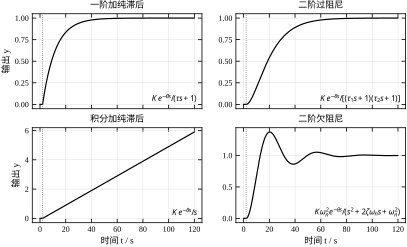
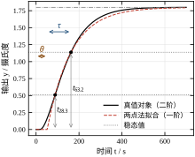
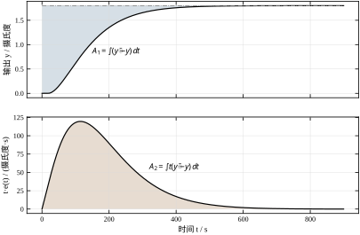
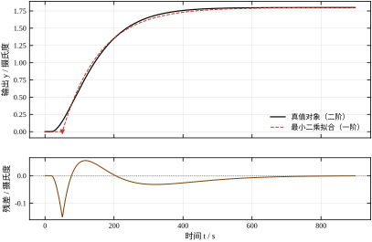
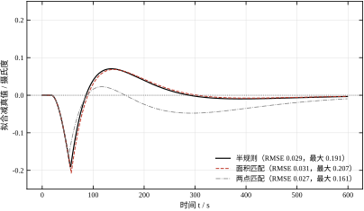
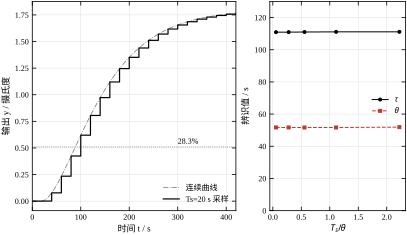
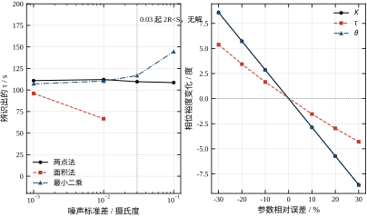
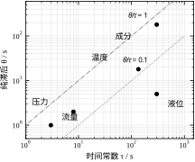
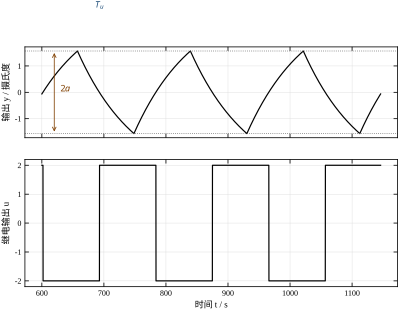

第 104 章把过程工业的五类回路摆开，说明了它们为什么难调：时间尺度横跨四个数量级、纯滞后普遍存在、执行器动作有代价。但那一章始终回避了一个更前置的问题——控制器里的参数是从哪里来的。SIMC、内模、Ziegler-Nichols 这些整定规则，输入都是同一个三参数模型：增益、时间常数、纯滞后。没有这三个数，整定公式一行也写不下去。
现场不会给出传递函数。没有哪家炼油厂会在 DCS 里存着“进料加热炉出口温度对燃料气流量的传递函数是 \frac{1.8e^{-18s}}{(60s+1)(75s+1)}”。工程师能做的只有一件事：把阀门推一下，看温度怎么变。推多少、推多久、记录什么、怎么从记录里算出三个数、算出的数有多可信——这就是本章的全部内容。

图 105-1 是这一章要面对的全部形状。左上是一阶加纯滞后（FOPDT）：先平着不动一段，再按指数爬到新稳态。右上两个惯性串联，起步更慢、拐点更靠后。左下是积分型——液位就是这样，阀门开大一点，液位就一直涨，没有稳态。右下是欠阻尼，会过冲、会振荡。四种形状对应四套辨识方法，本章把力气集中在前两种，因为过程工业里八成以上的回路可以归到这两类；积分型在 §105.9 单独处理，欠阻尼在过程对象里反而是少数（它更多出现在流量回路的小口径管路上）。
为什么只拟合三个参数，而不是老老实实辨识一个高阶模型？因为控制器的带宽有限。一个 PI 回路穿越频率通常在 1/(3\theta) 到 1/\theta 之间，模型只在这一点附近的相位和幅值起作用。高阶模型在 10 倍穿越频率以上的精度，对稳定性没有任何贡献，却要付出多得多的辨识代价：更多的测试时间、更多的参数、更高的方差。低阶近似不是偷懒，是在“参数少、方差小”和“结构准、偏差小”之间做的一次权衡，而这次权衡的结论在过程控制里几乎是压倒性的——宁可要一个参数偏差 10% 的一阶模型，也不要一个参数偏差 30% 的五阶模型。
这里要先厘清一个容易混淆的地方。第 17 章讲非参数辨识时，从阶跃曲线上读出的“表观延迟”是 2% 穿越点，那个读数里混着惯性环节的起步段——第 17 章的算例里真值纯滞后 40 ms，表观延迟却读出 116 ms，多出来的 76 ms 全是惯性。本章用的符号是 \theta，指的是纯滞后，不含惯性起步。两者不是同一个量，混用会让整定结果偏保守：把 116 ms 填进整定公式，算出的控制器会比需要的慢一倍。表 105-1 把两章的记号并排放好，后面每次出现都按这张表。
表 105-1 本章记号与第 17 章非参数辨识记号的对应
| 本章记号 | 含义 | 第 17 章对应 | 差异 |
|---|---|---|---|
| K | 稳态增益 | K | 同一量，都是 \Delta y/\Delta u |
| \tau | 时间常数 | T | 同一量，本章统一用 \tau |
| \theta | 纯滞后 | 无直接对应 | 需从表观延迟里扣掉惯性起步 |
| d_2 | 不使用 | 表观延迟（2% 穿越） | 恒大于 \theta，含惯性起步 |
| \rho=\theta/\tau | 难控指数 | 无 | 本章新增，见 §105.7 |
现在看一个具体的例子，它会把本章所有方法的局限一次暴露出来。设真实对象是二阶加纯滞后：K=1.8 摄氏度每 %、两个时间常数 60 s 与 75 s、纯滞后 18 s。给它一个 1% 的阶跃，用两点法在曲线上量：到 28.3% 用了 88.7 s，到 63.2% 用了 162.6 s。按一阶模型的公式算下去，得到 \tau=110.9 s、\theta=51.7 s。真值纯滞后是 18 s，辨识结果是 51.7 s——差了将近三倍。
这个数字不是算错了。一阶模型只有两个自由度（\tau 与 \theta），要同时贴合二阶曲线的起步段和中段，唯一的办法是把第二个时间常数的滞后效应折算成纯滞后。所以辨识出来的 \theta 从来不是物理上的纯滞后，而是“等效纯滞后”。它比真值大多少，取决于第二个时间常数有多大——这是模型结构的固有偏差，任何辨识算法都消不掉。理解这一点，才不会在看到“辨识滞后 51.7 s、实际管道传输只要 18 s”时怀疑仪表坏了。
那这样的模型还能用来整定吗？能，而且效果不差。原因是整定公式吃进去的就是“等效”这一层：SIMC 的 PI 参数是 K_c=\tau/(K\cdot 2\theta)、T_i=\min(\tau,8\theta)，把等效的 \tau 和 \theta 代进去，算出的控制器在真实二阶对象上仍然给出 61 度的相位裕度（§105.6 会把这个数算出来）。误差被“辨识假设”和“整定假设”两次同向地吸收掉了。这也解释了为什么工程上可以用一套粗糙的方法活得很好，却在换一种整定规则时突然失灵——两边的假设不再配套了。
本章的路线是这样：§105.2 推导三种从阶跃曲线提取 (\tau,\theta) 的方法——两点法、面积法、时域最小二乘，并说明它们各自在拟合曲线的哪一段；§105.3 给出从测试准备到参数入控制器的完整步骤；§105.4 讨论连续域下的降阶等效，回答“二阶怎么变成一个一阶”；§105.5 处理离散化带来的采样与量化；§105.6 把参数误差换算成相位裕度，这是判断“辨识够不够准”的唯一硬标准；§105.7 逐条解释 K、\tau、\theta、\rho 各自在回路里扮演什么角色；§105.8 给出噪声、窗口、初值这些具体操作层面的经验；§105.9 讲继电反馈辨识与积分对象，这是阶跃法的两个重要补充；§105.10 落到现场——测试怎么申请、怎么保证安全、模型参数怎么按工况修正；§105.11 说明这套方法的边界；§105.12 给出完整可运行的代码。
最后提醒一句关于“精度”的心理预期。本章会反复出现这样的数字：同一条无噪曲线，两种方法算出的 \tau 差 4 s（3.6%），\theta 差 5 s（10%）。有人会觉得这不够准。但真正该问的是：这 10% 的 \theta 误差，会让相位裕度掉几度？答案在 §105.6——不到 3 度。整定规则本身的保守程度就有 20 度以上的余量，辨识精度到“误差引起的裕度损失小于整定规则的保守余量”这一档，就够了。追求更高的辨识精度，在过程控制里是典型的过度工程。
本章的模型只有一式：
G(s)=\frac{K e^{-\theta s}}{\tau s+1} \tag{105-1}
三个参数各管一段。K 管稳态：给一个 \Delta u，输出最终改变了 \Delta y，则 K=\Delta y/\Delta u。它来自物料或能量的稳态平衡，与动态无关，所以最容易测——把阶跃前后的两个稳态值一减就行，噪声靠平均消掉。\tau 管变化速度：它是一阶惯性环节的时间常数，物理上是“容量乘阻力”。一个水箱的容量是截面积、阻力是出口阀的液阻，两者相乘就是液位回路的时间常数；换热器的容量是金属与流体的热容、阻力是传热热阻。\theta 管“什么时候开始动”：纯滞后不是惯性，它不改变波形形状，只把整条曲线向右平移。
\theta 有三个来源，性质完全不同，但都表现为时间平移，所以在一阶模型里被合并成一个数。第一是传输滞后：物料从阀门走到测温点需要时间，管道长度除以流速；第二是测量滞后：在线分析仪的采样周期、气相色谱的分析周期，成分回路的 \theta 常常高达几分钟，主要就是这一项；第三是执行器与信号链的死区：阀门从接收信号到真正动作的间隙、DCS 的扫描周期、通信延迟。三者相加才是物理纯滞后。
这三个来源里只有第一个能通过改进硬件缩短。分析仪的周期改不了（色谱柱就要跑那么久），阀门的死区只能靠选型。所以成分回路的 \theta 天生比温度回路大一个数量级，这不是调参能解决的——\theta 一旦确定，回路的带宽上限就定了，这一点 §105.7 会给出定量关系。
把式 (105-1) 的阶跃响应归一化。设 t=0 时施加幅值为 \Delta u 的阶跃，则
\frac{y(t)}{K\Delta u}= \begin{cases} 0, & t\le\theta\\ 1-e^{-(t-\theta)/\tau}, & t>\theta \end{cases} \tag{105-2}
记归一化幅值为 f，反解出到达该幅值所需的时间：
t_f=\theta-\tau\ln(1-f) \tag{105-3}
式 (105-3) 对任意 f 都成立，但只有两个特殊的 f 能让上式变简单。取 f=1-e^{-1}=0.632，\ln(1-f)=-1，于是
t_{63.2}=\theta+\tau \tag{105-4}
再取 f=1-e^{-1/3}=0.2835，\ln(1-f)=-1/3，于是
t_{28.3}=\theta+\frac{\tau}{3} \tag{105-5}
两式相减，\theta 消掉，只剩 \tau：
\tau=\frac{3}{2}\left(t_{63.2}-t_{28.3}\right)=1.5\,\Delta t \tag{105-6}
\theta=t_{63.2}-\tau \tag{105-7}
这就是两点法的全部。它之所以是过程工业里用得最广的方法，不是因为准，而是因为它只需要两个读数：在记录纸上找到 28.3% 和 63.2% 两条水平线，读出两个时刻，减一下、乘 1.5。没有迭代、没有初值、没有矩阵求逆，操作工培训十分钟就能上手。

用本章的算例走一遍。真值曲线到 28.3% 用了 88.7 s，到 63.2% 用了 162.6 s，差 \Delta t=73.9 s。乘 1.5 得 \tau=110.9 s，再从 162.6 里减掉 110.9，得 \theta=51.7 s。图 105-2 把这四个数画在同一张图上：两条水平虚线是 28.3% 与 63.2% 的判据线，两条竖直箭头分别是 \tau 与 \theta。注意 \theta 的箭头起点在 t=0，终点在 t_{63.2}-\tau——它量的是“等效滞后”，不是图上曲线真正开始离开零线的时刻（那个时刻是 18 s）。
从式 (105-6) 与 (105-7) 还能读出误差传播的方式，这一点比方法本身重要。把两式展开成两个读数的线性组合：
\tau=1.5\,t_{63.2}-1.5\,t_{28.3},\qquad \theta=-0.5\,t_{63.2}+1.5\,t_{28.3} \tag{105-8}
t_{28.3} 的系数在 \tau 里是 -1.5，在 \theta 里是 +1.5；t_{63.2} 的系数在 \tau 里是 +1.5，在 \theta 里只有 -0.5。这意味着 28.3% 那个读数一旦读偏，\tau 和 \theta 会朝相反方向各偏 1.5 倍，而 \theta 的估计几乎完全由 t_{28.3} 决定。工程上的推论是：读 28.3% 的时刻要比读 63.2% 更小心，尤其是曲线起步慢、判据线离零线很近的时候——那里斜率高不了，1 s 的采样抖动就是 1 s 的读数误差，进了 \theta 就是 1.5 s。
两点法只用了曲线上两个点，其余信息全丢。面积法反过来，用整条曲线。定义残差 e(t)=\bar{y}-y(t)，其中 \bar{y} 是阶跃后的稳态值，然后算两个积分：
A_1=\int_0^\infty e(t)\,dt,\qquad A_2=\int_0^\infty t\,e(t)\,dt \tag{105-9}
对式 (105-1) 的对象分段积分。0<t\le\theta 段，y=0，被积函数是 K\Delta u 与 tK\Delta u；t>\theta 段，e(t)=K\Delta u\,e^{-(t-\theta)/\tau}。第一式：
A_1=K\Delta u\,\theta+K\Delta u\int_\theta^\infty e^{-(t-\theta)/\tau}dt =K\Delta u(\theta+\tau) \tag{105-10}
第二式多一个 t 因子，指数积分给出 \tau\theta+\tau^2，于是
A_2=K\Delta u\left(\frac{\theta^2}{2}+\tau\theta+\tau^2\right) \tag{105-11}
式 (105-10) 有个非常重要的解释：A_1/(K\Delta u) 是响应曲线的“平均停留时间”。对一阶对象它是 \theta+\tau；对二阶对象它是 \theta+\tau_1+\tau_2；对任意阶对象它是 \theta+\sum_i\tau_i。也就是说，A_1 与模型阶数无关，它量的是“扰动从进到出的平均耗时”。这一点让面积法在工程上有了一个两点法没有的用途：即使不拟合模型，也能从 A_1 直接读出对象的“总惯性+滞后”，用它判断这个回路大概能调多快。
把式 (105-10) 与 (105-11) 相除，记 S=\theta+\tau、R=A_2/A_1：
R=\frac{A_2}{A_1}=\frac{\theta^2/2+\tau\theta+\tau^2}{\theta+\tau} =\frac{S^2+\tau^2}{2S} \tag{105-12}
第二式用了 \theta=S-\tau 换元。式 (105-12) 是一个关于 \tau 的二次方程，解出来是
\tau=\sqrt{S\left(2R-S\right)},\qquad \theta=S-\tau \tag{105-13}
这里出现了本章第一个“硬约束”：根号里必须非负，即 2R\ge S。这不是数值技巧，而是物理约束——只有当曲线的二阶矩足够大（尾部拖得够长）时，才能把总滞后 S 拆成一个惯性加一个纯滞后。如果噪声把 R 压低到 S/2 以下，式 (105-13) 无解，面积法直接失效。这个条件有多脆？§105.6 的算例里，噪声标准差 0.03 摄氏度（阶跃幅值 1.8 的 1.7%）时，2R-S 已经是 -36.9 s。

图 105-3 是这两条积分的几何。上半幅的阴影是 A_1：稳态线与响应曲线之间夹的面积，阶跃幅度越大、尾部拖得越长，这块面积越大。下半幅的阴影是 A_2，被积函数多乘了一个 t，所以尾部被显著放大——t=500 s 处的残差虽然只有 t=100 s 处的几十分之一，乘上时间权重后贡献相当。这解释了面积法的性格：它对“尾巴”极其敏感。
代入算例的数字。A_1=275.4、K\Delta u=1.8，得 S=153.00 s；A_2=29370.4，得 R=106.65 s。2R-S=60.29 s 为正，有解：\tau=\sqrt{153.00\times60.29}=96.05 s，\theta=153.00-96.05=56.95 s。
先看 S=153.00。真值对象的总滞后是 18+60+75=153 s，一分不差。这不是巧合，正是式 (105-10) 的推论——面积法对“总滞后”的估计是精确的，与模型阶数无关。再看拆分：\tau=96.05、\theta=56.95，与两点法的 110.9、51.7 相比，\tau 小了 14.8 s（13%），\theta 大了 5.3 s（9%）。注意两点法的两个估计值加起来是 162.6 s，比真值总滞后 153 s 大了 9.6 s——两点法并不守恒总滞后，守恒的只有面积法。
拆法不同的根源是加权方式。两点法只看曲线上升最快的两处，对尾部不敏感，于是把二阶的“慢尾巴”整体当成一个更大的时间常数，\tau 偏大、\theta 偏小。面积法用 t 加权，尾部权重高，为了解释那条拖长的尾巴，它宁可要一个更小的 \tau 和一个更大的 \theta——更大的 \theta 让响应起步更晚，从而在不改变总面积的前提下把尾部拉长。两种拆法在整定上后果不同：\tau 偏大、\theta 偏小意味着控制器更激进，面积法的结果更保守。
前两种方法都是“手工配方”：先选几个特征点或几条积分，再反解参数。它们的优点是透明，缺点是无法回答“这两个参数是不是最优的”。最小二乘把这件事变成一个明确的优化问题。定义残差平方和
J(\tau,\theta)=\sum_{k=1}^{N}\left[y_k-\hat{y}(t_k;\tau,\theta)\right]^2 \tag{105-14}
其中 \hat{y} 是式 (105-1) 在同样阶跃输入下的预测值。K 不参与搜索，直接取终值 \hat{K}=(y_N-y_0)/\Delta u——这个估计的方差最小（终值附近的噪声可以靠平均压掉），而且 K 与 \tau,\theta 在目标函数里近乎解耦，一起搜只会增加计算量。于是问题变成二维无约束优化，在 (\tau,\theta) 平面上找 J 的谷底。
式 (105-14) 对 \tau 连续可导，对 \theta 却不是——t<\theta 段预测值恒为 0，\theta 一动，参与求和的数据点就跳变一次，梯度在 \theta 方向上是分段常数。这意味着基于梯度的优化器在 \theta 上会抖，工程上干脆用网格搜索：先粗搜 80\times80，再在最优点附近按 1/10、1/100 缩窗细搜三轮。全章 12 组数字的算例里，这个策略总共只花 3.6 s，精度到 0.1 s，足够。

算例的结果是 \tau=107.16 s、\theta=50.38 s，残差均方根 0.0217 摄氏度——相对 1.8 摄氏度的阶跃幅值只有 1.2%。图 105-4 下半幅画出了残差：它在 t\approx130 s 附近达到正的最大值，然后转为负值，在 t\approx400 s 附近回到零。这个形状说明一阶模型在二阶对象的“拐点”处系统性偏高（起步比真实对象快）、在后段系统性偏低（尾巴不够长）。最小二乘无法消除这个形状，只能把正负面积调到最平衡——这正是 L_2 准则的定义。
与另两种方法对照：\tau=107.16 落在两点法的 110.9 与面积法的 96.05 之间，\theta=50.38 也落在 51.7 与 56.95 之间。这不是巧合。最小二乘的权重是“每个采样点一票”，介于两点法的“只看两点”与面积法的“按 t 线性加权”之间，所以结果必然居中。三种方法在无噪曲线上给出的三个答案，本质上是三种加权方式的三个重心。
把三个结果并排放，差异一目了然：
表 105-2 三种辨识方法在同一条无噪曲线上的结果
| 方法 | 用到的曲线信息 | \tau / s | \theta / s | 相对两点法的 \tau 偏差 | 计算量 |
|---|---|---|---|---|---|
| 两点法 | 28.3% 与 63.2% 两个时刻 | 110.9 | 51.7 | — | 两次插值 |
| 面积法 | 全曲线的零阶与一阶矩 | 96.05 | 56.95 | -13.4\% | 两次积分 |
| 最小二乘 | 全曲线逐点 | 107.16 | 50.38 | -3.4\% | 约 1.1 万次残差 |
三者对 \tau 的估计极差 14.8 s，对 \theta 的极差 6.6 s。如果只想要一个“哪个对”的答案，那是问错了问题——真值对象是二阶的，式 (105-1) 无论怎么取参数都不可能同时对上起步、中段和尾部，三个答案对应三种“对不上的方式”，没有哪一个更“真”。能比较的只有它们在整定上的后果，这要用相位裕度来量，见 §105.6。
真正该关心的是稳健性。把噪声加进来，三者的表现立刻分出层次。噪声标准差从 0 加到 0.01 摄氏度（阶跃幅值的 0.56%），两点法的 \tau 从 110.9 漂到 112.1（+1.1%），面积法从 96.05 掉到 66.7（-31\%），最小二乘从 107.2 到 110.3（+2.9%）。噪声 0.03 摄氏度时，面积法的判别式 2R-S 变成 -36.9，直接无解；噪声 0.10 摄氏度时，2R-S=-365.8，残差曲线已经被噪声完全淹没，A_2 的积分不再有物理意义。
层次分明的原因在积分的方差。设噪声是独立同分布、标准差 \sigma，采样间隔 T_s，则 A_1 的方差约为 \sigma^2T_s\cdot T_{\text{win}}，随窗长线性增长；A_2 的方差约为 \sigma^2T_s^3\cdot T_{\text{win}}^3/3，随窗长的三次方增长。R=A_2/A_1 是两个大方差量之比，误差被放大到不可用。两点法只查两次表，噪声只影响那一两个采样点的插值，方差与窗长无关，所以即使噪声大到 0.10 摄氏度，\tau 也只漂了 2%，\theta 从 51.7 漂到 33.5（-35\%）。
这给出一条很实用的分工原则：无噪或高信噪比时用面积法，因为它给出的总滞后 S 精确且物理意义明确；有噪声时用两点法，因为它只依赖曲线的局部形状；需要最优拟合、且能接受计算量时用最小二乘。 现场绝大多数情况是第三条路走不通（DCS 的历史数据采样周期往往是 1 s，1500 点，能算但没必要），所以实际是前两条的组合：先用面积法算 S 定基调，再用两点法算拆分，两者差得太多就说明曲线不干净。
辨识出来的数最终要进整定公式，所以“辨识误差有多大”必须翻译成“回路性能差多少”。翻译的桥梁是开环频率特性。以 PI 控制器配式 (105-1) 的对象为例，开环传递函数是
L(s)=K_c\left(1+\frac{1}{T_i s}\right)\frac{K e^{-\theta s}}{\tau s+1} \tag{105-15}
在穿越频率 \omega_c 处 |L|=1，相位裕度是 180^\circ+\angle L(j\omega_c)。把相位拆开：
\angle L(j\omega_c)=-90^\circ+\arctan(\omega_c T_i)-\arctan(\omega_c\tau)-\omega_c\theta \tag{105-16}
式 (105-16) 的最后一项是纯滞后贡献的相位，它随频率线性增长，没有上限——这就是纯滞后最要命的地方。对 \theta 求偏导，得到本节最重要的一条灵敏度关系：
\frac{\partial \angle L}{\partial \theta}=-\omega_c \quad\Longrightarrow\quad \Delta\text{PM}\,(\text{度})=-\frac{180}{\pi}\omega_c\,\Delta\theta \tag{105-17}
代入算例的数值：\omega_c=2\pi\times1.434\times10^{-3}=9.01\times10^{-3} rad/s，于是 \theta 每多 1 s，相位裕度掉 0.517 度。反过来看，如果要求辨识误差引起的裕度损失不超过 5 度，\theta 的误差就必须控制在 9.7 s 以内——相对 55.5 s 的名义值，允许 17% 的误差。这个门槛比想象中宽松得多。
对 \tau 的灵敏度则小一个量级：
\frac{\partial \angle L}{\partial \tau}=-\frac{\omega_c}{1+(\omega_c\tau)^2} \tag{105-18}
算例里 \omega_c\tau=0.879，分母是 1.772，所以 \tau 的灵敏度只有 \theta 的 56%。更关键的是它不随频率线性增长：\tau 偏大只是让惯性环节的相位提前一点，而 \theta 偏大是每一赫兹都在扣相位。
增益 K 的误差不直接进相位，它通过移动 \omega_c 间接起作用：K 偏大，穿越频率右移，所有相位项都变差。算例中 K 偏 10% 使 \omega_c 从 1.434 mHz 移到 1.577 mHz，裕度掉 2.86 度；\theta 偏 10% 使裕度也掉 2.86 度，两者数值上几乎重合（差不到 0.01 度）。这个重合有明确的工程后果：从相位裕度的变化上，分不清是增益读大了还是滞后读大了。 现场遇到“回路比预期的更振荡”，只看裕度无法定位，得回去看阶跃曲线的形状——增益误差不改变曲线的形状和时间尺度，只改变幅度；滞后误差会把整条曲线右移，同时让稳态值到达得更晚。
这三条灵敏度合起来，给出了本章判断“辨识够不够准”的唯一硬标准：不看参数本身的百分比误差，看它折算成的相位裕度损失。损失小于整定规则自带的保守余量，这组参数就能用。§105.6 会把这个标准做成一张表。
工程上的阶跃测试不是“推一下阀门看曲线”，它有一套固定动作。表 105-3 是本章推荐的流程，每一步都带判据，判据不满足就不许往下走。这套流程的价值不在于严谨，而在于它把“事后发现数据不能用”的概率压到很低——现场测试最贵的成本是时间窗口，一旦把装置推到非稳态又发现数据废了，第二次申请测试就难了。
表 105-3 阶跃测试的八个步骤与判据
| 步 | 动作 | 判据 | 常见失败 |
|---|---|---|---|
| 1 | 明确辨识目的与回路边界 | 写清是整定单回路还是给 MPC 做模型 | 目标是 MPC 却只测了单回路阶跃 |
| 2 | 确认稳态 | 30 分钟内波动小于 2 倍噪声标准差，无趋势 | 前一个工段还在调整就开测 |
| 3 | 定幅值与方向 | 幅值不小于 5 倍噪声，输出变化不超过量程 10% | 幅值太小，信噪比不够 |
| 4 | 配置采集 | 采样周期不大于 \theta/10，全程不换量程 | 中途自动换量程，曲线出现台阶 |
| 5 | 施加并保持 | 一次推到位，保持到输出走平 | 分几次推，等效成斜坡 |
| 6 | 预处理 | 去趋势、对齐时刻、剔除饱和段 | 把阀门饱和段当成对象特性 |
| 7 | 提取参数并互验 | 两种方法算出的 \tau 相差小于 20% | 只用一种方法，错了不知道 |
| 8 | 入控制器并微调 | 闭环阶跃无持续振荡，回调时间符合预期 | 直接把仿真参数抄进 DCS |
第 1 步最容易被跳过，也最贵。辨识的目的决定了测试的形态：如果只是为单回路 PI 整定，一次 1% 的阶跃、20 分钟数据就够；如果是要给第 58 章的 MPC 做模型，需要的是覆盖多个工作点的多组阶跃，还要测通道间的耦合，工作量差一个数量级。目的不清，测试设计就没有依据。
第 2 步是硬门槛。稳态不是“看起来平”，要有量化判据：取测试前 30 分钟的数据，算标准差 \sigma_n，若均值漂移超过 2\sigma_n 或存在单调趋势，就不能开测。这一条挡住的是最常见的事故来源——上游工段正在调整，对象自己就在动，测出来的“阶跃响应”里混着别人的扰动，后面所有参数都是错的。
第 3 步定幅值，本质是在信噪比和扰动代价之间取平衡。幅值下限由噪声定：输出变化至少要达到噪声标准差的 5 倍，否则两点法读出的时刻会被噪声推来推去。算例里噪声 0.10 摄氏度、阶跃幅值 1.8 摄氏度，比值只有 18，\theta 的估计已经从 51.7 漂到 33.5；若幅值再小一半，比值降到 9，两点法就不可用了。幅值上限由工艺定：温度回路通常不许超过设定值 5 摄氏度，流量回路不许让下游压力波动超过 0.02 MPa，这些约束写在操作规程里，测试方案必须逐条对照。
第 4 步的采样周期，一个常用的经验是 T_s\le\theta/10。§105.5 会看到，对两点法而言这个条件其实可以放松到 T_s\approx2\theta 而参数几乎不变——但那是无噪的情形。有噪时采样太稀，单点噪声无法靠相邻点平滑，插值误差直接进参数。所以 T_s\le\theta/10 这条经验要保留，它防的不是采样损失，是噪声。
第 5 步之后有个具体的操作问题：阶跃要记录多久才能停？记录太短，稳态值估低，K 和 \tau 全部偏小；记录太长，装置在非稳态多待一小时，风险和成本都上去了。这个问题有确定的答案，靠的是截断偏差的定量估计。
设真实稳态值是 \bar{y}，但记录只到 t_{\text{end}}，于是把 y(t_{\text{end}}) 当成稳态。对一阶对象，截断造成的相对偏差是
\frac{\bar{y}-y(t_{\text{end}})}{\bar{y}-y(0)} =e^{-(t_{\text{end}}-\theta)/\tau} \tag{105-19}
要让 K 的偏差小于 1%，需要 e^{-(t_{\text{end}}-\theta)/\tau}<0.01，即 t_{\text{end}}>\theta+4.6\tau。这就是“五个时间常数”这个经验的出处。
算例把这件事实测了一遍。以半规则等效的 \tau_{\text{ref}}=97.5 s 为基准，把窗口从 1 倍缩到 5 倍：
表 105-4 拟合窗口长度对两点法结果的影响
| 窗口长度 | 截止时刻 / s | 估出的 K | 估出的 \tau / s | 估出的 \theta / s | K 的相对偏差 |
|---|---|---|---|---|---|
| 1\tau | 97.5 | 0.591 | 33.9 | 40.9 | -67\% |
| 2\tau | 195.0 | 1.322 | 72.9 | 50.6 | -27\% |
| 3\tau | 292.5 | 1.642 | 96.5 | 51.9 | -8.8\% |
| 5\tau | 487.5 | 1.786 | 109.5 | 51.8 | -0.8\% |
1 倍时间常数的窗口是灾难：K 只估到 0.591，不到真值的三分之一。原因很直接——这条曲线在 97.5 s 处才走到 33%，把这一点当稳态，等于把整个幅度压掉了三分之二。3 倍窗口时 K 还差 8.8%，5 倍窗口时差 0.8%，与式 (105-19) 给出的一阶估计（1% 量级）对得上。
有个细节值得注意：\tau 和 \theta 对窗口的敏感度不一样。窗口从 3\tau 拉到 5\tau，\tau 从 96.5 变到 109.5（+13.5%），\theta 几乎不动（51.9 到 51.8）。原因是 \theta=t_{63.2}-\tau，窗口把 t_{63.2} 抬高的量和把 \tau 抬高的量互相抵消了。这种抵消是这个对象的巧合，换一组参数就不成立，不能当成规律来用——\theta 看起来稳，其实是两个都在变的量恰好相减。
工程上的结论是：记录到 5\tau 再停，且 K 一定要用测试后的稳态值，不能用记录末值。 如果工艺不允许等那么久，宁可多等，也不要缩短窗口后用“经验修正系数”补——表 105-4 显示修正系数随窗口长度剧烈变化，没有通用值。
第 7 步的“互验”是本章反复强调的做法：用两种方法各算一遍，看差多少。差得小，说明曲线干净、模型结构合适；差得大，说明有问题，必须先查清再入控制器。
判据定在 20% 是有依据的。对同一个真值对象，两种原理不同的方法（两点法看局部、面积法看全局）本来就会给出不同的等效参数，这个固有差异在算例里是 13.4%。如果观测到的差异远大于 13%，比如 40%，那就不只是方法差异了，通常对应三种情况：曲线有噪声（面积法会明显偏离）、对象不是一阶（高阶对象的尾部长，面积法的 \tau 会被压低）、测试期间有未记录的其他扰动（两种方法各自被不同段的数据带偏）。
反过来，如果两种方法的结果几乎完全一致（差异小于 2%），也别急着高兴——这通常意味着数据被过度平滑过，两点法读到的两个时刻其实来自同一条平滑曲线，独立性已经没有了。
一个更严格的互验方式是把辨识结果代回去，算预测曲线与原曲线的残差均方根。算例里最小二乘的残差是 0.0217 摄氏度，占阶跃幅值的 1.2%。如果残差超过 5%，说明一阶结构不够，得考虑二阶模型（§105.4）或者检查数据。
最后一步是把 K、\tau、\theta 填进整定公式，算出 K_c、T_i（PID 还要 T_d），再写进 DCS。这一步有三个容易出错的地方。
第一是量纲。辨识出的 K 是“工程单位比”，比如摄氏度每 %；而整定公式里的 K_c 是“控制器输出百分比每测量单位百分比”。若变送器量程是 0–200 摄氏度对应 0–100%，则测量值的归一化系数是 2，K 要乘这个系数才能用。这类错误在现场极其常见，表现是“参数算出来差了一百倍”。
第二是执行器方向。K 为负（阀门开大温度下降）时，整定公式里的 K_c 也要取负，或者把控制器设成反作用。忘记这一点，闭环一投运就是正反馈，几秒钟就撞限幅。
第三是先降额投运。算出的参数不要直接全额投用，先按 0.6 倍增益投，观察两个设定值阶跃，确认无持续振荡后再逐步加到全额。原因不是参数不准，而是辨识时对象处在某个工作点，实际投运时会偏离——§105.10 会给出按工况修正的具体做法。
前三节的所有推导都在连续时间域里做：对象是 G(s)，测试是连续记录的曲线，积分是对连续时间求的。这一节继续留在连续域，但要处理一个前三节绕过去的问题：如果对象本来就是二阶的，为什么还要把它压成一阶？
答案在 §105.1 已经给过一半：控制器带宽有限，模型只需要在穿越频率附近准。但“压成一阶”有讲究——同样一个二阶对象，可以压出无穷多组 (\tau,\theta)，每组在不同的频段准。选哪一组，取决于你打算用这个模型做什么。这一节就是把这个“选”的过程讲清楚。
先看二阶对象本身。本章算例的真值是
G_2(s)=\frac{1.8\,e^{-18s}}{(60s+1)(75s+1)} \tag{105-20}
它的阶跃响应有解析解：
y(t)=K\Delta u\left[1-\frac{\tau_1 e^{-(t-\theta)/\tau_1}-\tau_2 e^{-(t-\theta)/\tau_2}}{\tau_1-\tau_2}\right],\quad t>\theta \tag{105-21}
两个时间常数 60 s 与 75 s 相差不大，属于典型的“过阻尼、无明显拐点”的二阶对象。这类对象在过程工业里最常见——串联的换热器、串级的搅拌罐、带管道的容器，都是这个形状。它们和真正的一阶对象的区别，在曲线上只表现为“起步更慢、尾巴更长”，肉眼很难分辨。
正因为肉眼难辨，才需要降阶规则。规则的作用是把“压到哪一段准”这件事变成一个可计算的选择。
第一条是 Skogestad 的半规则。对小时间常数 \tau_2，它的处理方式是“对半分”：一半算进主导时间常数，一半算进纯滞后。
\tau=\tau_1+\frac{\tau_2}{2},\qquad \theta=\theta_0+\frac{\tau_2}{2} \tag{105-22}
其中 \theta_0 是原始纯滞后。这条规则的依据是低频相位匹配。串联环节在低频的相位是 -(\tau_1+\tau_2+\theta_0)\omega，一阶模型在低频的相位是 -(\tau+\theta)\omega，让两者相等就要求 \tau+\theta=\tau_1+\tau_2+\theta_0。式 (105-22) 满足这个条件，而“对半分”是在满足条件的前提下再给一个具体分配——如果把 \tau_2 全部算进 \tau，高频相位会不够；全部算进 \theta，又过于保守。对半分是个折中，Skogestad 用大量算例验证过它在 PI 整定上的效果。
第二条是面积匹配，就是 §105.2.3 的式 (105-13)。它要求降阶前后的 A_1 与 A_2 两个矩完全相等。A_1 相等自动给出总滞后守恒，A_2 相等给出分配方式。
第三条是两点匹配，就是 §105.2.2 的两点法。它要求降阶前后的曲线在 28.3% 与 63.2% 两处重合，其余不管。
三条规则的输入是同一个二阶对象，输出是：
表 105-5 三种降阶规则对同一个二阶对象给出的等效参数与残差
| 规则 | \tau / s | \theta / s | \tau+\theta / s | 残差 RMSE / 摄氏度 | 最大误差 / 摄氏度 | 误差绝对积分 IAE |
|---|---|---|---|---|---|---|
| 半规则 | 97.5 | 55.5 | 153.0 | 0.029 | 0.191 | 15.4 |
| 面积匹配 | 96.0 | 57.0 | 153.0 | 0.031 | 0.207 | 15.5 |
| 两点匹配 | 110.9 | 51.7 | 162.6 | 0.027 | 0.161 | 19.4 |
表 105-5 里有三件事值得说。
第一，半规则与面积匹配几乎重合：\tau 差 1.5 s（1.5%），\theta 差 1.5 s（2.6%）。这不是巧合，因为两者都满足 \tau+\theta=153.0 的守恒条件，而分配方式又都近似按“矩”来。这条数值上的接近有个实用价值：半规则可以直接当成面积法的手算版本。 现场没有计算工具时，用式 (105-22) 心算，结果与跑完整积分差不到 2%。
第二，两点匹配破坏了总滞后守恒：\tau+\theta=162.6，比真值多 9.6 s。原因是它只顾两个点，不管曲线下的总面积。多出来的 9.6 s 意味着它把对象估得比实际更“慢”，整定时会偏保守。
第三，误差指标之间互相矛盾。两点匹配的 RMSE（0.027）和最大误差（0.161）都是三者中最好的，IAE 却是最差的（19.4，比另两个高 26%）。这个矛盾不是数据错误，而是指标本身在量不同的东西：RMSE 和最大误差都被拐点附近的大偏差主导，那里误差绝对值大但持续时间短；IAE 是全时段积分，尾部的小偏差累计起来占主导，而两点匹配在尾部偏得最多。选哪个指标，取决于你更在意“最坏时刻”还是“总偏差”。

图 105-5 把三条残差曲线画在同一张图上（拟合值减真值），三个形状各不相同，正好对应三种规则的侧重点。
半规则（实线）在 26–83 s 段为负，最低点 -0.191 摄氏度出现在 55 s。原因很直接：这时一阶模型还停在零（\theta=55.5 s 未到），真值对象早已起步，所以模型显著偏低。85–290 s 段转为正，峰值 0.066 摄氏度在 130 s 附近，说明模型在这一段追得太快。300 s 之后残差回到零附近，600 s 时只剩 -0.003。整体形状是“先低后高再收敛”。
面积匹配（虚线）与半规则几乎重叠，负峰同样是 -0.191，正峰 0.063 摄氏度出现在 162 s，比半规则晚 32 s。晚的原因正是它把 \theta 多分了 1.5 s、把 \tau 少分了 1.5 s——曲线整体右移了一点，正峰也跟着右移。这就是表 105-5 里两者 RMSE 只差 0.002 的图形解释。
两点匹配（点划线）是另一种性格。它的负峰只有 -0.161（出现在 52 s），但在 162.6 s 处精确回到零——那是它的第二个匹配点，参数就是按这一点定的。麻烦在之后：残差从 165 s 起再次转负，300 s 时达到 -0.048，一直拖到 900 s 才真正归零。这条又长又浅的负尾巴，正是它 IAE 最大的原因。三种规则的 IAE 差 26%，差的全在这条尾巴上，不在峰值上。
三条曲线在 600 s 之后都还有残余，说明一阶模型对二阶对象的“长尾”永远拟合不好。尾巴上的绝对误差最大 0.048 摄氏度，占阶跃幅值的 2.7%，对稳态没有影响，但对积分项有影响——控制器会在这段时间里持续积累误差。这是 §105.6 要讨论的“模型误差如何转成闭环偏差”的一个入口。
时域残差回答的是“曲线像不像”，整定真正关心的是“穿越频率附近的相位准不准”。把三个一阶模型的相位与二阶真值逐点对比，就得到三种规则的频段性格。
\angle G_2(j\omega)=-\arctan(60\omega)-\arctan(75\omega)-18\omega \tag{105-23}
\angle \hat{G}(j\omega)=-\arctan(\tau\omega)-\theta\omega \tag{105-24}
在同一频率上相减，得到表 105-6。穿越频率取 §105.6 将要算出的 1.434 mHz（\omega_c=9.01\times10^{-3} rad/s），其余各点按 \omega_c 的倍数取。
表 105-6 三种降阶模型相对真值的相位误差（度，正号表示模型比真值更“稳”）
| 频率 | 真值相位 | 半规则误差 | 面积匹配误差 | 两点匹配误差 |
|---|---|---|---|---|
| 0.2\omega_c | -15.73 | +0.03 | +0.03 | -0.91 |
| 0.5\omega_c | -38.44 | +0.40 | +0.34 | -1.45 |
| \omega_c | -71.74 | +1.79 | +1.46 | +0.07 |
| 2\omega_c | -119.32 | +1.67 | +0.54 | +2.53 |
| 4\omega_c | -172.05 | -16.67 | -19.44 | -10.66 |
这张表比时域残差有信息量得多。
在低频段（0.2\omega_c 到 0.5\omega_c），半规则与面积匹配的误差都在 0.4 度以内，几乎可以忽略。这是“总滞后守恒”的直接回报：低频相位只取决于 \tau+\theta，两者都守恒到 153.0 s，所以低频必然准。两点匹配在这一段反而差 1 到 1.5 度，因为它多算了 9.6 s 的总滞后。
在穿越频率处，排名翻转：两点匹配的误差只有 0.07 度，半规则 1.79 度，面积法 1.46 度。两点匹配在这一点的准，是“两点法用 63.2% 那个时刻”带来的副产品——一阶模型的 63.2% 点恰好对应相位上比较敏感的位置，在这点对齐等于把 \omega_c 附近的相位也拉住了。但这个准确是脆的：它只在这一条频率线上成立，偏离 \omega_c 就迅速退化。
在 4\omega_c 处，三个模型全部失效，误差从 -10 度到 -19 度。这说明一阶模型在高频段根本不能用来判断相位——真值的两个惯性环节在高频各贡献 90 度，一阶模型只有一个 90 度，差距必然拉大。好在 4\omega_c 处开环增益已经远小于 1，对稳定性没有影响。这一点是低阶建模的合法性基础：不准的频段恰好是用不到的频段。
三条规则怎么选，到这里可以给出明确答案。如果按整定公式算 PI 参数，用半规则或面积匹配——它们在低频到 \omega_c 都稳，误差同号（都偏乐观不超过 1.8 度），整定规则的保守余量能吸收。如果只是想复现阶跃曲线的形状（比如做操作员培训仿真），用两点匹配——它的最大误差和 RMSE 最小，曲线最像。如果要做频域设计（比如算 Bode 图上的稳定裕度），三个都不能用，必须直接上二阶模型。
一阶模型在 \omega_c 处最多差 1.8 度，且符号单一（三个模型都偏乐观），看起来可以永远用一阶。所以边界不能画在相位误差上，得画在残差上：相位误差只在一条频率线上量，残差量的是整条曲线。表 105-5 里三种规则的 RMSE 都在 0.03 摄氏度量级，占阶跃幅值 1.6%，这是“一阶够用”的量化依据。
什么时候不够用？两个条件。一是对象的阶数更高：三个相近的时间常数串联时，一阶模型只有一个惯性环节，4\omega_c 附近的相位误差从 -16 度扩大到 -40 度以上，而残差会升到阶跃幅值的 5% 以上。二是两个时间常数相差不到 2 倍时，谁是“主导”变得模糊，半规则把 \tau_2 的一半并入 \tau_1 会让 \tau 明显偏大，整定结果偏激进。判据统一到一条：残差超过阶跃幅值的 5%，就上二阶。 这与 §105.3.3 的互验门槛是同一个数。
用二阶模型时，参数不再靠两点法，而是直接拟合式 (105-21)。做法和一阶的最小二乘完全一样，只是搜索维度从二维变成三维（\tau_1、\tau_2、\theta，K 仍取终值），计算量涨到原来的几十倍。这也是工程上“能一阶就一阶”的现实理由：二阶辨识的网格搜索在 1500 点数据上要跑几分钟，而收益只有 1.8 度相位。
二阶模型的整定不属于本章范围，见第 106 章。这里只给一个接口：Skogestad 的 SIMC 对二阶对象给出 K_c=\tau_1/[K(\theta_c+\theta)]、T_i=\tau_1、T_d=\tau_2，其中 \theta_c 是期望的闭环时间常数，通常取 \theta。把这组式子与一阶的 K_c=\tau/(2K\theta) 对照可以看出，二阶整定把 \tau_2 放进了微分时间，用微分去抵消第二个惯性——这正是 PID 存在的理由，也是第 44 章埋下的伏笔。
前面四节的所有曲线都是在连续时间上画的。现场不是这样：DCS 每秒扫一次，变送器把 0–200 摄氏度切成 4096 份，历史库再按 5 s 或 10 s 存一个点。辨识拿到的是一条离散的、量化的序列。
先说结论，免得后面绕：对两点法而言，采样几乎不改变结果，量化才是真正的敌人。 这两件事常被混为一谈，其实机理相反。采样是把连续曲线变成点，丢的是“点与点之间”的信息；量化是把每个点的数值取整，丢的是“点上的精度”。两点法只读两个时刻，它需要的是“曲线上某个高度对应哪一刻”，采样让这个时刻只能取到 T_s 的整数倍；量化让这个高度只能取到分辨率的整数倍，于是反推出的时刻有一片不确定的区间。前者是离散误差，上限 T_s/2；后者可以远大于前者，因为曲线的斜率在尾部很缓。
按不同的 T_s 对同一条真值曲线采样，再做两点法，结果见表 105-7。
表 105-7 采样周期对两点法结果的影响（真值 \theta=18 s，等效 \theta\approx51.7 s）
| T_s / s | T_s/\theta | K | \tau / s | \theta / s |
|---|---|---|---|---|
| 1 | 0.06 | 1.800 | 110.9 | 51.7 |
| 5 | 0.28 | 1.800 | 110.9 | 51.7 |
| 10 | 0.56 | 1.800 | 111.0 | 51.7 |
| 20 | 1.11 | 1.800 | 111.1 | 51.7 |
| 40 | 2.22 | 1.800 | 111.1 | 51.9 |
采样周期从 1 s 加到 40 s，跨了 40 倍，\tau 只动了 0.2 s，\theta 只动了 0.2 s。这与“采样必须比 \theta 快十倍”的经验完全相反——40 s 的采样是 \theta 的 2.2 倍，按那条经验早就不该用了。
原因是本章一直强调的那件事：辨识出的 \theta 是 51.7 s，不是物理的 18 s。读数的离散化只影响 51.7 s 这个等效量，它与 T_s 的比值是 51.7/40=1.3，还不算离谱。物理上的 18 s 滞后在整个辨识里只以“曲线起点位置”的形式出现一次，而两点法根本不看起点，它看的是 28.3% 与 63.2% 两个高度。所以等效滞后掩盖了物理滞后的量化误差——这是一个容易被忽略的好处。

图 105-6 左幅是 T_s=20 s 的采样结果（阶梯线）叠在连续曲线上，右幅是五个采样周期下的 \tau 与 \theta。左幅能看出采样丢掉了什么：曲线在拐点附近的一段被压成几级台阶，台阶宽度 20 s。右幅能看出采样没改变什么：两条线几乎是水平的。这个对比就是本节的核心结论。
但这个结论有前提。它成立是因为等效 \theta（51.7 s）远大于 T_s。如果对象是流量回路（物理 \theta=1 s、\tau=3 s），DCS 采样 1 s，那么物理滞后与采样周期同量级，量化误差就直接进了参数。此时表 105-7 的乐观结论不适用，必须按 §105.5.3 的方法算一遍。
量化是更隐蔽的误差源。设变送器量程 0–200 摄氏度、12 位 AD，分辨率是 200/4096=0.0488 摄氏度。读数被量化到最近的整数倍，等价于在曲线上叠加了一个幅度不超过 \pm0.0244 摄氏度的均匀误差。两点法的两个读数各带这个误差，反推出的时刻就有一个区间：
\Delta t_f=\frac{\Delta y/2}{\left|dy/dt\right|_{t_f}} \tag{105-25}
算例的真值曲线在两个特征点处的斜率是：28.3% 处 0.00982 摄氏度每秒，63.2% 处 0.00667 摄氏度每秒。代入式 (105-25)，半个分辨率对应的时刻误差是 2.49 s 与 3.66 s。
这两个数进入式 (105-8) 的线性组合。\tau 的误差最坏情况是 1.5\times(3.66+2.49)=9.2 s，按独立误差合成是 \sqrt{1.5^2(3.66^2+2.49^2)}=6.6 s；\theta 的误差最坏情况是 0.5\times3.66+1.5\times2.49=5.6 s，独立合成是 \sqrt{0.5^2\times3.66^2+1.5^2\times2.49^2}=4.2 s。
\theta 的量化不确定度 4.2 s，占 51.7 s 的 8.1%，折算成相位裕度损失是 4.2\times0.517=2.2 度（用 §105.2.6 的灵敏度）。这个量级可以接受，但它说明了一件事：12 位 AD 对温度回路刚好够用，对量程更大或斜率更缓的回路就不够。 比如成分回路，量程 0–100%、斜率常常只有每秒 0.001 个百分点，同样 12 位分辨率下的 \Delta t 会到 20 s 以上，两点法直接失效——这时必须靠滤波或换更高分辨率的通道。
量化的一个反直觉之处是：扩大量程会恶化精度，而不是改善。 为了“看得全”把温度变送器量程从 0–100 改成 0–400，分辨率从 0.024 变成 0.098，\theta 的不确定度翻两番。这是现场配置变送器时常犯的错——量程留了太多余量，代价全在辨识精度上。
辨识出连续的 (\tau,\theta) 之后，要落到 DCS 里就得转成离散形式。对零阶保持的输入，式 (105-1) 的精确离散化是
G(z)=\frac{K(1-a)z^{-d-1}}{1-az^{-1}},\qquad a=e^{-T_s/\tau},\quad d=\left\lfloor\frac{\theta}{T_s}\right\rfloor \tag{105-26}
这里有两个细节。第一，a=e^{-T_s/\tau} 是精确的，不是近似的——零阶保持下一阶环节的离散化没有误差，这一点和双线性变换不同。第二，指数上的 d+1 里那个额外的 1 来自零阶保持本身：输入在采样周期内保持不变，等效于平均延迟半拍，再加上整数拍延迟 d。
\theta 不是 T_s 整数倍时，d=\lfloor\theta/T_s\rfloor 会丢掉不足一拍的部分，最大误差 T_s。工程上有两种补法：一是把余数并入 \tau（保守），二是用一阶全通（Thiran）近似分数延迟，它在低频相位上更准但会引入高频增益。本章的算例里 \theta=51.7 s、T_s=1 s，比例是 51.7 拍，余数 0.7 拍，两种补法差别不到 0.1%，可以忽略。只有 T_s 与 \theta 同量级时才有区别。
式 (105-26) 还有一个结构性后果：d\ge0 意味着数字控制至少有一拍延迟。即使物理对象没有纯滞后，d=0 时仍有 z^{-1}。这一拍在相位上是 -\omega T_s，在 \omega_c 处是 \omega_c T_s 弧度。算例里 \omega_c=9.01\times10^{-3}、T_s=1，只有 0.009 rad，折 0.5 度，可以忽略；但如果为了省历史库空间把采样放到 20 s，这一拍就是 0.18 rad，折 10.3 度——白扔掉十度裕度。这是“采样周期不能随意放大”的最硬的理由，它和辨识精度无关，纯粹是控制回路的代价。
综合上面几条，采样周期的约束来自三个方向，取最严的那个：
T_s\le\min\left(\frac{\tau}{10},\ \frac{\theta}{2},\ \frac{\theta}{5}\right) \tag{105-27}
第一项 \tau/10 保证曲线形状被采到（一个时间常数至少十个点）；第二项 \theta/2 保证纯滞后不被量化掉（§105.5.2 的反面：当等效 \theta 与 T_s 可比时，表 105-7 的结论失效）；第三项 \theta/5 是控制回路的相位预算，来自式 (105-26) 那一拍的相位损失不超过 10 度。
这三项里通常最严的是第一项。对本章算例（\tau=97.5、\theta=55.5），三项分别给出 9.75 s、27.8 s、11.1 s，取 9.75 s——实际工程上直接用 1 s，远严于要求，因为 1 s 是 DCS 的默认扫描周期，没有必要为了省数据量去挑战边界。但注意 \tau 小、\theta 大的回路（成分回路：\tau=300、\theta=180）三项给出 30 s、90 s、36 s，最严的仍是第一项 30 s，这时第三项的相位预算反而宽松——因为同一拍延迟占用的相位与 \theta 无关，只与 \omega_c 有关，而大滞后的回路本身穿越频率就低。
反过来说，如果某个回路的 T_s 已经定死在 10 s（历史库只存这么密），而 \theta 只有 1 s（流量回路），那么式 (105-27) 三项是 0.3 s、0.5 s、0.2 s，全都不满足。这种情况下辨识出来的参数不能直接用，必须先说明“数据分辨率不足”，用更长的窗口和更强的滤波去换，或者干脆改用继电反馈测试（§105.9），后者不依赖曲线的细节形状。
前五节把 K,\tau,\theta 从数据里挖了出来，但“这三个数准不准”本身没有意义。有意义的是另一个问题：把这三个数交给整定公式，配出一组 K_c,T_i，落到真实对象上，回路还剩多少裕度？参数误差是“因”，裕度是“果”，中间隔着整定公式和降阶规则两层放大或吸收。本节把这条因果链走一遍，量化“辨识误差换多少度相位裕度”。
整定一律用 SIMC，取 \tau_c=\theta（第 44 章的做法，也是工业上最常用的一档）：
K_c=\frac{\tau}{K(\tau_c+\theta)}\Big|_{\tau_c=\theta}=\frac{\tau}{2K\theta},\qquad T_i=\min(\tau,\,8\theta) \tag{105-28}
代入半规则等效一阶（\tau=97.5 s、\theta=55.5 s、K=1.8），得 K_c=0.488、T_i=97.5 s。注意 T_i 恰等于 \tau——这不是巧合，8\theta=444 s 远大于 \tau，第二支不会触发。
于是开环传函变成
L(s)=K_c\Big(1+\frac{1}{T_i s}\Big)\frac{K e^{-\theta s}}{1+\tau s} =K_c\Big(1+\frac{1}{\tau s}\Big)\frac{K e^{-\theta s}}{1+\tau s} =\frac{K_c K}{\tau s}e^{-\theta s} \tag{105-29}
分子分母的 (1+\tau s) 精确对消，PI 加上一阶对象退化成一个纯积分器加纯滞后。这个化简值得停一下：它意味着 K、\tau、\theta 三个参数在闭环里只剩两个组合——积分增益 K_cK/\tau 和滞后 \theta。整定公式里 K_c\propto\tau/(K\theta)，代入后 K_cK/\tau=1/(2\theta)，与 K、\tau 完全无关。也就是说，只要对象能被一阶描述、只要取 \tau_c=\theta，SIMC 给出的穿越频率就固定在 \omega_c=1/(2\theta)，裕度也随之固定：
\omega_c=\frac{K_cK}{\tau}=\frac{1}{2\theta},\qquad \text{PM}=90^\circ-\frac{180}{\pi}\omega_c\theta=90^\circ-\frac{180}{\pi}\cdot\frac{1}{2}=61.35^\circ \tag{105-30}
数值对得上：\omega_c=1/(2\times55.5)=0.009009 rad/s，即 1.434 mHz；\omega_c\theta=0.5 rad，0.5\times57.296=28.65 度，90-28.65=61.35 度。
增益裕度同样可以闭式写出。积分器加滞后的相位是 -90^\circ-\omega\theta，穿越 -180^\circ 发生在 \omega=\pi/(2\theta)，该处幅值
|L|=\frac{K_cK}{\tau}\cdot\frac{2\theta}{\pi}=\frac{1}{2\theta}\cdot\frac{2\theta}{\pi}=\frac{1}{\pi} \quad\Longrightarrow\quad \text{GM}=20\lg\pi=9.94\ \text{dB} \tag{105-31}
实测 9.94 dB，与式 (105-31) 逐位相符；相位穿越点在 4.505 mHz，是穿越频率的 \pi/2 倍。
这两个结论的含义比数值本身重要。第一，SIMC 的 PM 61.35 度、GM 9.94 dB 是它内建的安全垫，不是这个对象的运气——换任何一个 FOPDT、任何 K 和 \tau，只要 T_i=\tau，结果一模一样。第二，这个安全垫的来源可以一眼看穿：\omega_c\theta=0.5 意味着穿越频率处滞后本身只吃掉 28.65 度相位，剩下 61 度全是余量。SIMC 把“闭环时间常数”设成等于纯滞后，本质上是在说“我要让回路快到极限的一半”，于是相位预算天然宽裕。第三，这套推导的每一步都依赖“一阶 + 精确对消”，两者任一不成立，61.35 与 9.94 就不再成立。
真实对象是二阶（60 s、75 s、滞后 18 s），上一节的名义回路是用半规则（97.5 s、55.5 s）整定的。把同一组 K_c=0.488、T_i=97.5 s 直接作用在真实对象上重新算裕度，得到
f_c=1.395\ \text{mHz},\qquad \text{PM}=60.42^\circ
与名义的 61.35 度相比少了 0.93 度，穿越频率低了 2.7%。这个结果有点出人意料：我们用一个一阶模型去代表一个二阶对象，中间还隔着一次半规则近似，代价竟然不到 1 度。
要看清这 0.93 度是怎么来的，得把“同频率下的相位差”和“穿越点移动”分开。在名义穿越频率 \omega_c=0.009009 处，把两边的相位逐项拆开，如表 105-8。
表 105-8 名义穿越频率处的相位项分解（单位：度）
| 相位项 | 名义一阶 | 真值二阶 | 差 |
|---|---|---|---|
| PI 环节 -\arctan[1/(T_i\omega)] | -48.70 | -48.70 | 0 |
| 第一个时间常数 60 s | — | -28.39 | — |
| 第二个时间常数 75 s | — | -34.05 | — |
| 合并后的一阶 \tau=97.5 s | -41.30 | — | — |
| 纯滞后 18 s | -9.29 | -9.29 | 0 |
| 半规则额外并入的 37.5 s 滞后 | -19.36 | 0 | — |
| 合计 | -118.65 | -120.44 | -1.79 |
把这张表横着读：两个惯性环节合起来是 -62.44 度，比单个 \tau=97.5 s 的 -41.30 度多滞后 21.14 度，这是“二阶比一阶难控”的那部分；但半规则并没有白拿，它把 75 s 的一半（37.5 s）搬进了纯滞后，这 37.5 s 在 \omega_c 处贡献 19.36 度——恰好把 21.14 度抵掉 19.36 度，净剩 1.79 度。
这个抵消不是巧合，是半规则的设计意图。把 1/(1+\tau_2 s) 与 e^{-\tau_2 s/2}/(1+\tau_2 s/2) 在 s=0 处展开，两者都是 1-\tau_2 s+O(s^2)，一阶项完全相同，差异从二阶才开始。当 \omega\tau_2 远小于 1 时二阶项可忽略，半规则几乎精确；算例里 \omega_c\tau_2=0.68，已经不满足“远小于 1”，残差才露出 1.79 度。
再看穿越点。真值对象在 \omega_c 处的幅值因子是
\frac{1}{\sqrt{1+(0.540)^2}}\cdot\frac{1}{\sqrt{1+(0.676)^2}}=0.880\times0.828=0.729
而半规则只有一个极点，因子是 1/\sqrt{1+(0.878)^2}=0.751，比真值高 3.1%。原因很朴素：两个极点串联的幅值衰减是两个因子相乘，合并成一个极点后只衰减一次，所以一阶模型在穿越频率处“显得”增益更高。那 37.5 s 搬进纯滞后对幅值毫无贡献——纯滞后只转相位、不衰减，这正是半规则在幅值上偏乐观的根源。
幅值高 3% 意味着真实回路的穿越点必须往左挪 3% 才能回到 |L|=1，实际挪了 2.7%（1.434→1.395 mHz）。往左挪的好处是相位各分量都变小：表 105-8 里每一项都按各自的斜率缩了一点，合计补回 0.85 度。于是同频率的 1.79 度劣势，被穿越点左移补掉一半，最终只剩 0.93 度。
这条因果链值得记住的形状是：降阶误差先在相位上扣分、再在幅值上把穿越点拉低、最后靠穿越点左移还回一部分。三个环节方向不同，不能只算其中一个就下结论。如果只看到表 105-8 的 -1.79 就断定“一阶模型乐观 1.8 度”，会高估风险；如果只看最终的 0.93 度就断定“降阶无所谓”，会在 \theta/\tau 小的回路上翻车——那里的穿越频率高，\omega\tau_2 不再远小于 1，二阶项残差会迅速放大（§105.4 的相位误差表已经显示，在 4\omega_c 处误差是 -10.7 到 -19.4 度）。
上一小节固定了整定参数、只换对象，量的是“降阶损失”。工程上更常见的是另一类误差：整定时用的三个参数本身就错了（辨识误差、工况漂移、催化剂老化），而 K_c,T_i 是按错参数算好、投运后再没动过。这时误差只经过回路传函这一道放大，路径反而更清楚。
做法是把误差逐个加在 K、\tau、\theta 上，整定参数保持名义值不动，重新算真实回路的裕度。表 105-9 是 \pm10\%、\pm20\%、\pm30\% 六档的结果。
表 105-9 单参数误差对相位裕度与增益裕度的影响（名义 PM 61.35 度、GM 9.94 dB）
| 参数误差 | \DeltaPM（K） | \DeltaPM（\tau） | \DeltaPM（\theta） | GM（K） | GM（\tau） | GM（\theta） |
|---|---|---|---|---|---|---|
| -30\% | +8.59 | +5.38 | +8.59 | 13.04 | 7.94 | 13.04 |
| -20\% | +5.73 | +3.44 | +5.73 | 11.88 | 8.66 | 11.88 |
| -10\% | +2.86 | +1.66 | +2.86 | 10.86 | 9.33 | 10.86 |
| +10\% | -2.86 | -1.54 | -2.86 | 9.12 | 10.51 | 9.12 |
| +20\% | -5.73 | -2.97 | -5.73 | 8.36 | 11.04 | 8.36 |
| +30\% | -8.59 | -4.30 | -8.59 | 7.66 | 11.54 | 7.66 |
表里最扎眼的是 K 与 \theta 两列完全相等，连小数点后两位都不差。这不是打印错误，是 §105.6.1 那个对消的必然结果。既然 L(s)=K_cKe^{-\theta s}/(\tau s)，回路在穿越频率附近的全部信息都在乘积 K\theta 里，K 涨 10% 与 \theta 涨 10% 对相位裕度的影响不可能不同。写成微分形式更直接：
\Delta\text{PM} =-\frac{180}{\pi}\,\omega_c\,\Delta\theta =-\frac{180}{\pi}\,\omega_c\theta\,\frac{\Delta K}{K} =-\frac{180}{\pi}\cdot\frac{1}{2}\cdot\varepsilon =-28.65^\circ\varepsilon \tag{105-32}
第一项把 \Delta\theta 换成相位，第二项用 \omega_c=K_cK/\tau 把 \Delta K 折算成相位——两条路走到同一个表达式，这正是“K 与 \theta 等价”的来源。第三项代入 \omega_c\theta=1/2，得到与对象无关的系数 -28.65 度。\varepsilon=0.1 时是 -2.87 度，表里是 -2.86，末位差来自网格上找穿越点的分辨率。
\tau 那列则完全不同，只有 K/\theta 的三分之一到二分之一（+30\% 时 -4.30 对 -8.59），而且 PM 与 GM 的方向相反：\tau 估大，PM 降但 GM 升。原因还是对消：整定时 T_i 被钉在名义 \tau 上，实际 \tau 一变，(1+\tau s) 与 (1+T_i s) 不再对消，回路退化成“积分 + 一阶 + 滞后”，多出来的 (1+\tau s)/(1+T_i s) 在低频段是纯幅值效应（压低增益、抬高 GM），在高频段才转为相位滞后（压低 PM）。两个方向同时发生，量级都不大。
这张表最实用的一条读法是：看到 PM 掉而 GM 升，先怀疑 \tau 估小了；看到 PM 和 GM 一起掉，怀疑 K 或 \theta 估小了。现场做一次阶跃复测，量出稳态增益和到达 63% 的时刻，就能把这两类错误分开。
把表 105-9 按敏感度排序：K 与 \theta 并列第一（每 10% 误差 2.86 度），\tau 第三（每 10% 误差 1.54 度）。这个排序和 §105.2 三种辨识方法的表现正好对上，可以互相印证：
换句话说，测试预算应该按“敏感度 × 不确定度”分配，而不是按“哪个参数看起来更重要”分配。K 敏感度高但不确定度低，花不了多少钱；\theta 两头都高，必须测到位；\tau 不确定度高但敏感度低，可以粗放一点。
工程上常问“参数差多少还能用”。用相位裕度不低于 45 度做界（45 度是 PI 回路能接受的下限，再低就开始有明显超调和振荡），由式 (105-30) 反解：
\omega_c\theta\le\frac{\pi}{2}-\frac{45\pi}{180}=\frac{\pi}{4} \quad\Longrightarrow\quad \theta\le\frac{\pi/4}{\omega_c}=\frac{\pi}{2}\theta_{\text{nom}}=1.571\,\theta_{\text{nom}} \tag{105-33}
数值是 1.571\times55.5=87.2 s，即 \theta 正偏差可以到 57.1%。反过来负偏差不设限——\theta 估大只会更保守，PM 单调上升，\theta\to0 时 PM 趋近 90 度。
这个 57.1% 看起来宽松，但它有三个前提，缺一个就缩水：
最后一条界线要说清楚：本节所有讨论都假设“参数错了但模型形式对”。如果面积法在噪声下根本无解（§105.2.3 里噪声 0.03 摄氏度的情形），问题不是裕度掉了多少度，而是三个参数根本拿不到——若程序不做判据、把开方前的负数硬塞进去，T_i=\tau 就会是虚数或负值，整定公式给出一个不能投运的控制器。这类错误没有“容忍边界”，只有“重测”。

图 105-7 把本节的两条主线并排放。左幅是 §105.2.3 那组噪声算例的曲线化：横轴是噪声标准差（对数刻度），纵轴是三种方法辨识出的 \tau。三条线的命运完全不同。两点法全程稳在 108.6 到 112.1 s，随噪声几乎没有系统性漂移——它只取两个时刻，噪声只影响这两点的定位，误差不累积。最小二乘从 107.2 s 单调爬到 144.5 s，噪声 0.10 摄氏度时高出 35%，因为它的目标函数是残差平方和，噪声越大越倾向于用更长的时间常数去“平均掉”波动。面积法最脆：0.01 摄氏度时已经掉到 66.7 s。原因在它的两个矩上——噪声让 S 从 153.00 掉到 147.80、R 从 106.65 掉到 88.95，判据 2R-S 从 60.0 掉到 30.1，开方开出来 \tau 就从 96.05 掉到 66.70 s；0.03 摄氏度时 2R-S 直接变负，无实数解，曲线断开。
面积法那条线在 0.03 处消失，不是绘图时漏了点，而是辨识函数返回了 NaN——§105.2.3 的判据 2R\ge S 在这里第一次以图形的方式显现：不是精度变差，是方程根本没有解。这条线在图上留了一个缺口，比任何数字都更直观地说明“面积法对噪声的容忍窗口只有一个数量级”。
右幅是表 105-9 的曲线化，三条线在原点相交。K 与 \theta 两条线完全重合，图例里有三项、图上只看到两条——这不是绘图失误，恰好是式 (105-32) 那个等价的图形证据。\tau 那条线斜率约为另外两条的一半，符号与它们相同（同向偏），但对应的 GM 方向相反。横轴只画到 \pm30\%，是因为表只算了六档；对 K 与 \theta，式 (105-32) 是精确线性的，外推到任意幅度都成立，对 \tau 则只有小误差时才近似线性。
裕度是频域指标，现场工程师更关心超调量和调节时间。两者之间没有精确换算公式，但对“积分 + 滞后”这类回路有一个用了半个世纪的经验对应：PM 60 度附近超调 5%–10%、衰减比 4:1 到 5:1；PM 45 度附近超调 20%–25%、衰减比接近 3:1；PM 30 度以下开始出现连续振荡。本章名义回路 61.35 度落在第一档，属于“投运后基本不用再调”的区间。
这个对应表能用的前提是回路真的近似“积分 + 滞后”，也就是 §105.6.1 那个 T_i=\tau 的对消成立。把它翻成对过程的要求：SIMC 第二支 T_i=\min(\tau,8\theta) 取到 8\theta 的条件是 \theta/\tau<1/8。本章算例 \theta/\tau=0.57，取 \tau，对消成立；五类过程量里成分（0.60）、流量（0.33）、压力（0.25）、温度（0.133，勉强在 1/8 以上）都取 \tau，同样成立；只有液位例外——\theta/\tau=5/300=1/60，整定给出 T_i=8\theta=40 s，只有 \tau 的 13%，对消不成立。
液位回路按实际参数（K_c=30、T_i=40 s）算出来是 f_c=16.4 mHz、PM 48.7 度、GM 9.51 dB。PM 比 61.35 度低了 12.6 度，原因是对消失效：T_i=40 s 把 PI 零点推到了 1/40 rad/s，远高于对象极点 1/300 rad/s，那个极点在穿越频率处贡献的 88 度滞后没有任何零点去抵。GM 倒是还有 9.51 dB，几乎没变——这说明把两个裕度当同一个指标用是危险的：液位的 PM 已经逼近 45 度的界，GM 看上去却很安全，而 PM 才决定超调和振荡。所以液位这类“\theta 小、\tau 大”的回路不能拿本章的 61.35/9.94 当验收标准，必须按实际 T_i 重算。
至于二阶对象上那 0.93 度的偏差，按上面那张经验表折算，只抵三分之一档，超调差别在 1 个百分点量级——这就是本章算例能直接用频域指标指导投运的依据。但如果 \theta/\tau 更小、\tau_2 与 \tau_1 更接近（比如两个极点都在 70 s 附近），4\omega_c 处的相位误差会从 -10 度量级涨到 -20 度量级，那时频域裕度仍然可信，时域表现却会明显比 PM 预测的差，必须补一次闭环阶跃仿真。§105.7 会用 \theta/\tau 与 \tau 的绝对值把五类过程量排成一张表，说明每类回路各该相信哪个指标。
三个参数的作用要分两层看。物理层回答“它们对应现场什么量”，控制层回答“它们怎么进入控制器”。两层混在一起讲，就会出现“增益大好还是小好”这类没有答案的问题。本节先逐个说清物理来源，再把它们放回整定公式看传播方向，最后用 \theta/\tau 这一个比值把五类过程量排开。
K 的定义是稳态增益
K=\frac{\Delta y_{\infty}}{\Delta u},\qquad [K]=\frac{[\text{输出单位}]}{[\text{输入单位}]} \tag{105-34}
单位必须写出来，不能只写一个数。本章算例是 1.8 摄氏度每百分点阀位；换成开度分数则变成 180；把出口温度从摄氏度换成华氏度，数值再乘 1.8。同一个对象、同一个物理事实，K 可以写成 1.8、180、3.24 中的任何一个。现场最典型的一类整定事故就此产生：仪表量程改过（比如从 0–200 摄氏度改成 0–500 摄氏度），K 在数值上小了 2.5 倍，而控制器里的 K_c 没改，等效环路增益就大了 2.5 倍，回路开始周期性振荡，查了三天查不出原因。所以 K 永远要和“输入输出的量程”一起记录，不能只存一个数。
K 的物理来源是两段串起来的：阀门的流量特性（等百分比阀在小开度时增益小、大开度时增益大）× 过程的静态特性（热平衡、物料平衡）。这两段都不是常数：阀的工作点变了，过程的传热系数变了，K 就变。本章算例把 K 取成 1.8，指的是“额定负荷、50% 阀位附近”的局部增益，不是全量程的平均值。
K 在控制器里的作用是“除以”：K_c\propto 1/K。对象增益大一倍，控制器的比例增益就该小一半，否则同样的偏差会产生两倍的阀位动作。按式 (105-32)，K 若偏大一倍，相位裕度从 61.35 度掉到 32.7 度，已经进入持续振荡区。反过来说，K 偏小一半（比如催化剂失活后传热变差），PM 升到 75.7 度，回路变得迟钝但绝对安全。这解释了现场一个常见现象：同一个回路在低负荷时稳稳当当，一到满负荷就振——不是控制器坏了，是 K 随负荷涨了。
K 的好处是它最好测。只要测试前后各有一段稳态，两点定标就完事，甚至不需要完整的阶跃曲线：
K=\frac{\bar{y}_{\text{后}}-\bar{y}_{\text{前}}}{\bar{u}_{\text{后}}-\bar{u}_{\text{前}}} \tag{105-35}
两条横线各取 10 分钟平均，噪声被压掉一个数量级，误差通常在 2% 以内。这是三个参数里唯一能做到“几乎免费”的一个，也是唯一值得在每次大修后复测的一个。
\tau 的教科书定义是“阶跃后到达稳态值 63.2% 所需的时间”（从 \theta 起算）。由此派生三个常用关系：
\tau 的物理来源是“容量 ÷ 阻力”：换热器的热容除以热阻、储罐的容积除以流量、气容除以流阻。它描述的是对象自己“消化一个扰动”要多久，与控制器无关。
第一个误读是把 \tau 当成“到达稳态的时间”。按上面的关系，\tau 时刻只走到 63.2%，还差三分之一；工程上说“这个回路大概三分钟稳定”时，指的往往是 3\tau 而不是 \tau。本章算例 \tau=97.5 s，3\tau+\theta=348 s，接近六分钟——如果按“\tau 就是稳定时间”去跟操作工许诺两分钟，一定会被投诉。
第二个误读是“\tau 小就好控”。这句话只对了一半。看表 105-10 的 f_c 列：流量回路 \tau=3 s，穿越频率 79.6 mHz，一个振荡周期 12.6 s；成分回路 \tau=300 s，穿越频率 0.442 mHz，周期 37.7 分钟。相差 180 倍。但这两个回路的相位裕度完全一样，都是 61.35 度——因为决定裕度的不是 \tau，而是 \theta/\tau。\tau 小只意味着“对象自己动得快”，能不能把这个速度用起来，要看 \theta 允不允许。
\tau 最反直觉的性质是它在整定公式里的两处出现方向相同、正好抵消：K_c\propto\tau（\tau 大则比例增益大），T_i=\tau（\tau 大则积分时间也大）。两者同时变，环路增益 K_cK/\tau 与 \tau 无关，穿越频率也不变。这就是 §105.6.1 那个对消的另一种说法：\tau 决定控制器的参数绝对值，但不决定闭环能有多快。所以现场发现“对象变慢了”（\tau 变大）而不重调整定时，PM 只掉 4.3 度（表 105-9 的 +30\% 行）；重调整之后连这 4.3 度也不掉。
\theta 是“输入动了到输出开始动”之间的时间。它有三个来源，现场排查时要分开算：
\theta 在数学上特殊：e^{-\theta s} 的幅值恒为 1，只贡献相位。这意味着它不能被任何增益调整补偿。K 错了可以改 K_c，\tau 错了可以改 T_i，\theta 错了只能降带宽——把穿越频率往下压，让相位损失小一点。这是“滞后是性能第一杀手”的定量版本。
降多少？把 §105.6.5 的 45 度界换成频率就是
\text{PM}\ge45^\circ\ \Longleftrightarrow\ \omega_c\theta\le\frac{\pi}{4}\ \Longleftrightarrow\ f_c\le\frac{1}{8\theta} \tag{105-36}
本章 \theta=55.5 s，1/(8\theta)=2.25 mHz，实际 f_c=1.434 mHz，还有余量。若某个回路的 \theta 翻倍，带宽上限立刻减半，调节时间翻倍——而对象本身一点没变，只是多了一段管道。这就是为什么“加一段保温管道”这种看似无害的改造，会让一个调好的回路重新振荡。
式 (105-36) 还给出一个反直觉的推论：带宽与 \tau 无关，只与 \theta 成反比。两个对象 \tau 差 100 倍，只要 \theta 相同，能达到的闭环速度就一样。这也是 SIMC 把 \tau_c 设成 \theta 而不是设成 \tau 的原因——它按“滞后预算”分配速度，而不是按“惯性大小”分配。
把三个参数压成一个比值 \rho=\theta/\tau，难度就一目了然。表 105-10 是五类典型过程量按 SIMC（\tau_c=\theta）整定后的完整结果。
表 105-10 五类过程量的参数、整定值与裕度（K 统一取 1，温度取 1.8）
| 过程量 | \tau / s | \theta / s | \rho=\theta/\tau | K_c | T_i / s | f_c / mHz | PM / 度 | GM / dB |
|---|---|---|---|---|---|---|---|---|
| 流量 | 3 | 1 | 0.333 | 1.500 | 3 | 79.58 | 61.35 | 9.94 |
| 压力 | 8 | 2 | 0.250 | 2.000 | 8 | 39.79 | 61.35 | 9.94 |
| 液位 | 300 | 5 | 0.017 | 30.00 | 40 | 16.37 | 48.73 | 9.51 |
| 温度 | 135 | 18 | 0.133 | 2.083 | 135 | 4.421 | 61.35 | 9.94 |
| 成分 | 300 | 180 | 0.600 | 0.833 | 300 | 0.442 | 61.35 | 9.94 |
这张表有四组数字值得逐一看：
\rho 那一列跨了 35 倍，从液位的 0.017 到成分的 0.600。但注意，\rho 小的液位并没有因此“好控”——它的 PM 反而是全表最低的 48.73 度。原因在 T_i 那列：\rho<1/8 触发 SIMC 第二支，T_i=8\theta=40 s 而不是 \tau=300 s，对消失效（§105.6.6 已算过）。这说明“\rho 小就好控”要加一个限定：\rho 小到触发 T_i 换支之后，积分作用相对对象惯性过强，相位反而被吃掉。
f_c 那一列跨了 180 倍，从 79.58 mHz 到 0.442 mHz。用周期说更直观：流量回路的振荡周期 12.6 s，压力 25.1 s，温度 226 s，成分 37.7 分钟。这个差别不是控制器决定的，是式 (105-36) 的 1/(2\theta) 决定的——\theta 从 1 s 到 180 s，带宽就按比例缩。
K_c 那一列跨了 36 倍，从 0.833 到 30.0。这个跨度看着夸张，其实是 \tau/\theta 的跨度：K_c=\tau/(2K\theta)。流量回路 K_c=1.5 而液位 K_c=30，并不意味着液位的控制器“更激进”，恰恰相反——液位对象迟钝，需要大增益才推得动。
PM 与 GM 两列几乎全是 61.35 与 9.94，只有液位破例。这不是巧合，是 §105.6.1 的结构性结果：只要 T_i=\tau，任何 FOPDT 的 SIMC 回路都落在同一对裕度上。换句话说，SIMC 的“手感”与过程类型无关，只与 \theta/\tau 是否越过 1/8 有关。这一点在跨装置移植整定参数时非常有用：只要两个回路的 \theta/\tau 差不多，参数可以直接借鉴；\theta/\tau 差一个数量级，就不能。

图 105-8 把表 105-10 的前三列画在双对数平面上，横轴 \tau、纵轴 \theta，两条参考线分别是 \theta/\tau=0.1 与 \theta/\tau=1。流量与压力挤在左下角，\tau 只有几秒，任何采样周期都够用，测试也快；液位在右下角，\tau 大而 \theta 极小，是唯一落在 \theta/\tau=0.1 线以下的回路，位置本身就预示了它会被 SIMC 换支；温度居中，紧贴在 \theta/\tau=0.1 线上方（0.133），只差一点就会换支——这也是本章算例选温度类对象的原因，它站在分界线上，两种行为都能演示；成分在右上角，\tau 与 \theta 都大，是典型的“大滞后”回路。
这张图还有一个用处：判断测试要花多久。阶跃测试的合理时长是 5(\theta+\tau) 量级（§105.3.2 的截断分析），流量回路 20 s，压力 50 s，温度 765 s，成分 2400 s（40 分钟）。如果现场只给 10 分钟做测试，那么成分回路根本测不完，必须改用继电反馈（§105.9）或阶跃加模型外推。
把 §105.6.3 的表 105-9 和本节的结构性结果放在一起，会看到一件容易混淆的事：同样是“K 偏大 30%”，表 105-9 说 PM 掉 8.59 度，而按式 (105-32) 重调整后 PM 应该回到 61.35 度。差别在于是否重调。表 105-11 把这两种情形分列。
表 105-11 参数变化时的传播方向（↑ 表示增大，— 表示不变）
| 参数变化 | 重调整：K_c | 重调整：T_i | 重调整：f_c | 重调整：PM | 不重调：PM |
|---|---|---|---|---|---|
| K 增大 | 减小（反比） | — | — | — | 下降 |
| \tau 增大 | 增大（正比） | 增大（正比） | — | — | 略降 |
| \theta 增大 | 减小（反比） | — | 减小（反比） | — | 下降 |
三行的规律可以一句话概括：K 与 \tau 的变化被整定公式完全吸收，\theta 的变化被部分吸收。K 增大 30%，K_c 自动减小 30%，环路增益不变；\tau 增大 30%，K_c 与 T_i 同时增大 30%，对消依旧成立；\theta 增大 30%，K_c 减小 30%，f_c 也降 30%，PM 回到 61.35 度，但带宽掉了 30%，响应慢了 30%。所以在“重调整”这一列里，PM 全是“—”，代价都转移到了速度上。
这条规律解释了现场的一个困惑：“为什么我把参数重测了一遍、重新整定，回路还是不如以前快？”因为慢的根源在 \theta，而 \theta 的增大无法用任何整定抵消，只能接受带宽下降。要恢复速度，只有一条路：把 \theta 减下来（换快阀、缩短采样、去掉不必要的滤波），而不是继续在 K_c 和 T_i 上做文章。
反过来说，“不重调”那一列才是表 105-9 的现实含义：现场整定一次往往管几年，期间工况漂移、设备老化，参数早就不是整定时的值。这时 \theta 偏大 30% 会实打实掉 8.59 度，K 偏大 30% 也一样。整定的保质期取决于参数漂移的速度，而不是整定方法的好坏——这句话在第 24 章讲辨识的实际问题时出现过，在过程控制里它的具体形式就是表 105-11 的两列之差。
把本节压缩成三句话：
如果只记一个数，记 \rho=\theta/\tau：它决定这个回路是“流量型”（\rho 在 0.2–0.5，几秒到几十秒的周期）还是“成分型”（\rho 接近或超过 1，几十分钟的周期），也决定该用 PID、前馈还是 MPC。§105.8 会把这条比值落到具体调参动作上。
本章的“参数”有两层：辨识出来的 K,\tau,\theta，和辨识过程本身的选择。后者常被当成无关紧要的手续，实际上它决定了前者的可信度。本节按“先定结构、再定区间、然后预处理、最后验收”的顺序，把辨识过程里真正需要拍板的六个决定讲清楚，末尾列出五种最常见的错法。
模型结构的判据不能是“哪个拟合得更准”——二阶永远更准，因为它多一个自由度。真正要问的是“多出来的参数值不值得”。三条判据，从软到硬：
残差形状。用一阶去拟合二阶，残差是“先负、后正、再负”的 S 形，因为模型起步太晚（滞后被估大）又追得太快、最后收敛。§105.4.3 实测过这三段的幅值：-0.191 摄氏度、+0.066 摄氏度、-0.048 摄氏度。如果残差是单调的、或只有一次变号，通常不是阶次问题，而是稳态值或漂移的问题。
残差峰值相对阶跃幅值。§105.4.5 用的门槛是 5%：峰值超过 0.05K\Delta u 就升二阶，否则一阶够用。本章算例的峰值是 0.191 / 1.8 = 10.6%，超过门槛，说明严格讲该用二阶；但后面会看到，用一阶的代价只有 0.93 度裕度。
你要拿参数去干什么。这是最实用的一条。如果只是给 DCS 里的 PID 填三个数，一阶就够了——二阶模型整出来的 PID 还是一组 (K_c,T_i,T_d)，多出来的精度在控制器里体现不出来。如果要算相位裕度、要判断“能不能再快一点”、或者要做 Smith 预估，那就要看 \theta/\tau：小于 0.3 时一阶够（降阶误差在 1 度量级），大于 0.6 时一阶的相位误差会到 10 度量级，必须升二阶。
一条经验：流程工业里九成以上的回路用 FOPDT 就够，剩下的那一成里，多半是“参数其实够用，只是没人相信”。
起点取阶跃发生前 5 到 10 个采样。太短，y_0 被噪声带偏；太长，把阶跃前的缓慢漂移也平均进来，K 跟着偏。本章算例从 t=0 开始、阶跃也在 t=0，是理想情形；现场要留 1 到 2 分钟的“台阶前平台”。
终点取 3(\theta+\tau) 到 5(\theta+\tau)。早于 3(\theta+\tau)，曲线还差 5% 没走完，K 偏小、\tau 偏小；晚于 5(\theta+\tau)，多出来的点全是平台，对辨识没有新信息，却把后续扰动和漂移全收进来。§105.3.2 分析过截断的后果：截在 1\tau 处时，\tau 会被压掉三分之二——那还是“只截早”的情形，如果同时有漂移，误差会叠加。
权重是最容易被忽略的一项，也是本章最小二乘最大的隐患。本章的目标函数对每个采样点等权求和：
J(\tau,\theta)=\sum_{i=1}^{N}\big[y(t_i)-\hat{y}(t_i;\tau,\theta)\big]^2 \tag{105-37}
等权意味着“点数多的地方话语权大”。阶跃响应大部分时间停在平台上，平台段的点数远多于上升段，于是拟合会优先把平台对齐，上升段的形状被牺牲——表现出来就是 \tau 偏大、\theta 偏小。噪声越大，这个倾向越明显：图 105-7 左幅里最小二乘从 107.2 s 爬到 144.5 s，涨的正是这一部分。
改法有两种，都不复杂。一是把区间截到 3(\theta+\tau) 附近（本章约 460 s），让上升段和平台段的点数接近；二是把权重换成相对误差 1/\hat{y}^2，让平台段的大数值不再主导。前者更常用，因为它同时缩短了计算和受扰窗口。
阶跃数据在进辨识程序之前必须过四道：
第一步，粗测。用两点法，取 28.3% 与 63.2% 两个时刻，得到 (\tau,\theta) 的初值。这一步是秒级的，精度不高（本章算例 110.89 / 51.70 对真值 97.5 / 55.5），但它的作用是给下一步一个靠谱的起点。
第二步，细测。以粗测值为中心，在 (\tau,\theta) 平面上做网格搜索，范围取粗测值的 \pm50\%。本章的 80×80 粗搜加三级 41×41 细搜，跑完 3.6 s——对离线辨识完全够用。为什么要给定初值：J(\tau,\theta) 在 \theta 方向上是有多个局部极小值的（\theta 每多一拍、\tau 就少一点，残差可以做到差不多），全域盲搜很容易掉进“\theta 很大、\tau 很小”的那个坑，而那个坑对应的物理意义是错的。
第三步，验证。把辨识结果整定成 K_c,T_i，做一次闭环设定值阶跃（幅值取量程 2%），看超调量和衰减比。这一步不是可选项：开环拟合好，不等于闭环表现好，因为闭环还会暴露阀门粘滞、执行器限速、采样延迟这些开环数据里看不出来的东西。验收标准用 §105.6.6 的对应表：超调 5%–10%、衰减比 4:1 到 5:1 算合格；超出就回到第一步，先怀疑 \theta。
三步的比例大约是 1 : 10 : 30（按耗时），但决定成败的是第三步。跳过第三步的辨识，本质上只是“算出了三个数”。
残差曲线是辨识过程唯一能“自证”的东西，它的形状直接指向病因。表 105-12 是六种常见形状。
表 105-12 残差形状与病因对照
| 残差形状 | 病因 | 处置 |
|---|---|---|
| 先负后正、再回落（S 形） | 阶次不足，对象是二阶 | 升二阶，或用半规则（§105.4） |
| 全程单向偏置 | y_0 或 K 错，稳态没取对 | 延长终点，重取平台均值 |
| 尾部单向发散 | 漂移，未去趋势 | 减掉线性趋势后重算 |
| 周期性起伏 | 外部周期扰动（往复泵、换热切换） | 换测试时段，或对数据低通 |
| 窄尖峰 | 坏点、阀门粘滞 | 剔点，同时查阀门 |
| 全程贴合但 \theta 系统性偏 | 时间未对齐 | 用阀位反馈对齐（§105.8.3） |
这六种里只有第一种是“模型不够”，其余五种都是数据问题。实践中的顺序应该反过来：先排查后五种，确认数据干净了，再考虑升阶。直接升阶会把数据错误一起“拟合进去”，得到一个更复杂但同样错的模型。
坑一：用闭环数据做开环辨识。回路一直在自动控制，u 随 y 变化，数据里 u 与 y 的因果是反的，直接套本章方法会算出完全错误的增益。闭环辨识要用额外的激励信号，或者借助设定值变化，见第 21 章。
坑二：把阀门饱和当成增益变小。阶跃幅度取大了，阀开到 100% 走不动，曲线后半段被削平，拟合出来 K 偏小、\tau 偏大。本章算例的规则是“输出变化不超过量程 10%”（§105.3.1），就是为了防这一条。现场判断方法很简单：看阀位曲线，如果它在阶跃后贴住 0% 或 100%，这次测试作废。
坑三：把上游扰动当成纯滞后。前一个工段的调整还没结束就开测，曲线里混着别人的动态，拟合出来的 \theta 可能比真实值大一倍。§105.3.1 的“稳态判据”（30 分钟内波动小于 2 倍噪声标准差、无趋势）挡的就是这一条，它比任何算法都重要。
坑四：以为“数据越长越准”。噪声 0.10 摄氏度下，同一段数据把区间从 1500 s 依次截到 600、400、300 s，最小二乘给出的 \tau 是 144.5、147.8、116.5、114.3 s——跳了 30 s，方向还不单调。原因有两层：等权目标函数让平台段主导（区间越长，平台占比越大，\tau 越被拉长），而 K 取终点值又把终点噪声直接带进增益。区间应取 3(\theta+\tau) 到 5(\theta+\tau)（本章 459 到 765 s），但调区间只能治“权重失衡”，治不了“信噪比不足”：噪声到 0.10 摄氏度时，正确做法是多次阶跃取平均或先滤波，继续在区间上做文章只会得到另一组同样不可信的数。
坑五：拿 R^2 当验收指标。阶跃响应里平台段占 80% 以上的采样点，把平台对齐就能得到 R^2=0.99，而 \theta 可能已经错了 20%。R^2 高只说明“大部分点差不多”，不说明“关键的上升段对”。验收要看残差峰值（相对阶跃幅值）和残差形状，两者都比 R^2 灵敏。这是本章反复强调“残差形状”而不是“拟合优度”的原因。
把这五个坑合起来看，会发现它们有一个共同点：都不是算法问题，而是测试设计与数据理解的问题。辨识算法的选择（两点法、面积法、最小二乘）对最终精度的影响在 10% 量级，而测试设计的影响在 100% 量级。§105.9 会讲一种绕开这些问题的方法——不去拟合曲线的形状，只测回路的极限环。
前八节的方法都建立在同一个前提上：把回路打到手动，做一次阶跃，然后拟合曲线。这个前提在实验室成立，在装置上往往不成立。本节先算清阶跃测试的三笔成本，再介绍一种完全不同的思路——继电反馈，最后给出三个改进方向与失效边界。
按 §105.3 的流程，一次阶跃测试需要“稳定段—动作段—读数段”三段，稳定段与读数段各取 5\tau。表 105-13 是五类回路的账。
表 105-13 阶跃测试的时间成本
| 过程量 | \tau / s | 稳定段 / s | 总时长 / s | 偏离稳态 / s | 占比 |
|---|---|---|---|---|---|
| 流量 | 3 | 15 | 40 | 25 | 62.5% |
| 压力 | 8 | 40 | 90 | 50 | 55.6% |
| 温度 | 135 | 675 | 1360 | 685 | 50.4% |
| 液位 | 300 | 1500 | 3010 | 1510 | 50.2% |
| 成分 | 300 | 1500 | 3010 | 1510 | 50.2% |
三笔成本分别是：
时间。温度回路要 23 分钟，液位与成分要 50 分钟。这还是一次成功的测试，不含“测到一半发现上游在动、作废重来”的返工。
扰动。整个测试期内输出偏离稳态，占比 50%–62%。对于温度、成分这类直接决定产品质量的回路，半小时的偏离意味着半罐不合格品，或者要降负荷运行。
前提。测试必须从稳态开始、回到稳态结束。这一条在单回路试验装置上容易满足，在多工段串联的装置上很难——上下游任何一段在调整，测试就不成立（§105.8.6 坑三）。
这三笔成本加起来，解释了为什么流程工业里大量回路从来没有被正式辨识过：不是不会，是停不下来。
继电反馈测试（Åström–Hägglund，1984）把控制器摘掉，换成一个继电器：
u(t)=\begin{cases}+d, & e(t)\ge0\\ -d, & e(t)<0\end{cases} \tag{105-38}
继电器只有两个输出，回路一定会振荡——而且不是发散的振荡，是稳定的极限环。原因不难理解：振幅小了，继电器输出的方波相对偏差大，能量注入多，振幅涨；振幅大了，对象对基波的衰减变大，能量注入少，振幅落。两者平衡处就是极限环。
图 105-9 是本章算例的仿真结果，d=2.0 百分点，稳态后量得振荡幅值 a=1.5664 摄氏度、周期 T_u=182.0 s。上幅是输出 y（标注了 2a 的峰峰值），下幅是继电器输出 u 的方波，两者错开四分之一周期——这正是“对象在临界频率处滞后 180 度”的时域表现。

这个试验有三个好处，正好对上上一小节的三笔成本：
要定量，得先给继电器一个“等效增益”。用描述函数法：假设输入是正弦 a\sin\omega t，取输出方波的基波分量，二者之比就是
N(a)=\frac{4d}{\pi a} \tag{105-39}
极限环的持续条件是环路增益等于 -1：
1+N(a)G(j\omega_u)=0 \quad\Longrightarrow\quad G(j\omega_u)=-\frac{\pi a}{4d}=-\frac{1}{K_u},\qquad K_u=\frac{4d}{\pi a} \tag{105-40}
式 (105-40) 的右端是实数，所以极限环频率 \omega_u 就是 G(j\omega) 穿过负实轴（相位 -180^\circ）的频率，而 K_u 就是该点的幅值倒数——正是 Ziegler–Nichols 意义上的临界增益。这就是“继电法直接读出临界点”的数学形式。
描述函数法有一个隐含假设：只有基波通过。方波的三次谐波幅值是基波的三分之一，而对象对它的额外衰减只有 1/\sqrt{1+(3\omega_u\tau)^2} 除以 1/\sqrt{1+(\omega_u\tau)^2}。本章算例 \omega_u\tau=3.36，这两项分别是 0.0987 与 0.285，额外衰减只有 2.9 倍，三次谐波还剩基波的 11.5%——足以让幅值方程偏一成。
拿到 (K_u,\omega_u) 后，最省事的做法是不反解模型，直接用 Ziegler–Nichols 的临界比例度规则：
K_c=0.45K_u,\qquad T_i=\frac{T_u}{1.2} \tag{105-41}
代入 K_u=1.626、T_u=182.0 s，得 K_c=0.732、T_i=151.7 s。与 SIMC 的 K_c=0.488、T_i=97.5 s 相比，比例增益大 50%、积分时间长 56%。
两条参数落在回路上的效果（表 105-14）与直觉不同：
表 105-14 两组参数的裕度对比
| 参数来源 | K_c | T_i / s | f_c / mHz | PM / 度 | GM / dB |
|---|---|---|---|---|---|
| SIMC（辨识 \to 整定） | 0.488 | 97.5 | 1.434 | 61.35 | 9.94 |
| Z-N（继电 \to 整定） | 0.732 | 151.7 | 1.854 | 64.82 | 7.29 |
Z-N 的相位裕度反而更高（64.82 对 61.35），但增益裕度低得多（7.29 对 9.94）。前者来自积分时间：T_i=151.7 s 比对象极点对应的时间常数 97.5 s 更长，PI 零点落在更低频处，两个相位项之和不再凑满 90^\circ，穿越点附近的净滞后少了 12 度。后者来自比例增益：K_c 大了 50%（+3.5 dB），幅值曲线整体上移，相位穿越点处的增益更高。这组参数的“性格”是超调小、但对增益漂移敏感——若 K 再涨 30%（+2.3 dB），GM 只剩 5.0 dB，离振荡只剩一半余量。
这也说明“PM 高就是好”是个误读。两个裕度要一起看：PM 决定超调和振荡倾向，GM 决定抗增益漂移能力。Z-N 用 PM 换了 GM，SIMC 两者都留了余量。
如果不想用 Z-N、想回到本章的 FOPDT 框架，就得从 (K_u,\omega_u) 反解 (\tau,\theta)。两个方程三个未知数，必须借稳态增益 K：
\omega_u\tau=\sqrt{(KK_u)^2-1},\qquad \theta=\frac{\pi-\arctan(\omega_u\tau)}{\omega_u} \tag{105-42}
第一式来自幅值条件 K/\sqrt{1+(\omega_u\tau)^2}=1/K_u，第二式来自相位条件 -\arctan(\omega_u\tau)-\omega_u\theta=-\pi。
代入本章数据（K=1.8、K_u=1.626、\omega_u=0.0345）得 \tau=79.7 s、\theta=55.6 s。对照半规则等效值（97.5 s、55.5 s）：\tau 低了 18%，\theta 几乎不差。这个组合不能理解成“\theta 测得准”，而应理解成“误差被搬到了 \tau 上”：
这个陷阱的实际后果要看用途。若只拿去整定 PI，K_c=\tau/(2K\theta) 会偏小 18%，回路偏保守——本例因为 \theta 恰好补齐，K_cK/\tau=1/(2\theta) 仍然成立，f_c 与 PM 几乎不变，看不出问题。若拿这组参数去做 Smith 预估或模型预测控制，\tau 错 18% 会直接让预估器与被控对象失配，效果比不预估还差。同一个辨识结果，用在整定上无害，用在模型上致命——这是继电法最容易被误用的地方。
回差继电。理想继电在噪声下会频繁误翻转，极限环抖得量不准。加一个回差 \varepsilon（输出在 |e|>\varepsilon 时才翻转）能抗噪，代价是引入额外相位滞后 \arcsin(\varepsilon/a)，反解时必须扣掉：
\varphi_h=\arcsin\frac{\varepsilon}{a} \tag{105-43}
本章算例若取 \varepsilon=0.1 摄氏度、a=1.5664，滞后是 3.7 度，折 1.9 s 的 \theta。回差不白给，但比测不准强。
不对称继电。上下两个幅值取不同的 d_+、d_-，输出的直流分量不为零，可以同时估出稳态增益 K 与临界点——省掉一次单独的阶跃定标，这对不能停机做阶跃的回路很有价值。
积分对象专用。液位这类回路 \tau\to\infty，FOPDT 不成立，K 也趋于无穷。正确模型是“积分 + 纯滞后”：
G(s)=\frac{K_i}{s}e^{-\theta s} \tag{105-44}
继电试验下它的极限环频率与滞后直接对应：\theta=\pi/(2\omega_u)，积分增益由振幅给出。这类对象不能套本章的 FOPDT 公式，否则会算出几百秒的假时间常数（§105.6.6 的液位回路就是这种情形）。
继电法不是万能的，五种情形下会失效或严重失真：
把这五条与 §105.8.6 的五个坑对照，会发现一个共同的分工：阶跃法的风险在“数据质量”，继电法的风险在“对象状态”。前者靠预处理补救，后者只能靠测试前的检查。§105.10 会把这两套检查合成一张投运前的核对表。
本章的方法在纸面上是三步：取数、拟合、整定。落到装置上，每一步都有具体的工程约束——数据从哪个库拿、采样多密、参数存哪、怎么下装、什么时候该重辨识。本节按一次真实投运的顺序把这些讲清楚，最后给出一张可以贴在控制室里的核对表。
三条路，各有取舍：
DCS 历史库。最常用，也最容易出问题。两个参数必须先确认：存储周期与压缩方式。存储周期常见 1 s（趋势）与 5 s（长期归档），本章算例用 1 s。若只能用 5 s，按式 (105-27)，对 \tau=97.5 s、\theta=55.5 s 的回路仍然够（要求 9.75 s），但对流量回路（\tau=3 s）就不够。
压缩方式更隐蔽。多数历史库用“例外报告”——数值变化超过死区才存一个点，其余时间重复上一个值。这样取出来的曲线是阶梯状的：平台期一个点能顶几十秒，上升期反而点很密。对两点法影响不大（两个时刻的定位误差不超过一个存储周期），对面积法影响也不大（积分对阶梯不敏感），但对最小二乘影响明显：等权目标函数会把“点密”的上升段加权，权重本来就已经失衡（§105.8.2），压缩又让它更失衡。用历史库数据做最小二乘之前，先重采样到等间隔，这是最容易漏的一步。
专用测试记录。在控制器或上位机里单独组一个 1 s 的记录组，绕开历史库压缩。代价是要提前组态，好处是数据干净。
手工记录。听起来原始，但在老装置上仍然常见：操作工每 30 s 抄一次表。这种数据的采样周期与 \theta 同量级，只能做两点法，不能做最小二乘——不是算法不允许，是信息量不够。
表 105-15 是本章全部约束的汇总，十二条，按时间顺序排。
表 105-15 阶跃测试核对表
| 阶段 | 检查项 | 判据 |
|---|---|---|
| 前 | 回路在自动、无报警、无联锁旁路 | 必需 |
| 前 | 上游工段稳定 | 30 分钟内波动小于 2 倍噪声标准差、无趋势 |
| 前 | 输出有调节余量 | 阶跃后阀位不触及 0% 或 100% |
| 前 | 记录组已组态 | 采样周期满足式 (105-27)，无例外报告压缩 |
| 前 | 时间对齐 | 阀位反馈与温度采样同一时基，偏差小于 1 个采样周期 |
| 中 | 阶跃幅值 | 输出变化为量程 5%–10%，且不小于噪声的 5 倍 |
| 中 | 阶跃方向 | 先向安全侧（开大冷却、关小加热） |
| 中 | 持续时间 | 至少 5(\theta+\tau)，本章算例 765 s |
| 中 | 相邻回路 | 打手动，或投自动但加大积分时间 |
| 后 | 曲线检查 | 起跳前有平台、结束后回到平台，无二次扰动 |
| 后 | 残差检查 | 峰值小于阶跃幅值 5%，形状不属于表 105-12 的后五种 |
| 后 | 闭环验证 | 设定值阶跃 2%，超调 5%–10%、衰减比 4:1–5:1 |
这张表的十二条里，有九条与算法无关，只与“测得对不对”有关。这与 §105.8.6 的结论一致：测试设计的影响比算法选择大一个数量级。
辨识结果不能只留三个数，要留一条可追溯的记录。最小字段集是：
前四项是“模型”，中间三项是“可信度”，最后两项是“用法”。缺了可信度那三项，三年后没人知道这三个数能不能信——这正是很多装置“参数表里有数、但没人敢用”的原因。
整定参数下装时有三个动作必须按顺序做：
第一，确认积分项预置。DCS 的 PI 一般有“输出跟踪”或“积分预置”功能。下装新参数时，若不同时把积分项预置为当前输出，切换瞬间输出会跳变，跳变量等于 (K_c^{\text{新}}-K_c^{\text{旧}})\cdot e 加上积分项之差。本章算例从 K_c=0.488 改到 0.732，若偏差为 1 摄氏度，光比例项就跳 0.24 个百分点——足以引起一次可记录的波动。
第二，先投自动再改参数，不要反过来。手动状态下改参数，操作工看到的是阀位没动，容易误以为“没生效”而反复改。
第三，改完等三个闭环时间常数再评估。本章算例的闭环时间常数约等于 \theta=55.5 s，三个就是 167 s。在此之前看到的超调、振荡都是暂态，不构成评价依据。
三条触发条件，任何一条满足就该复测：
残差超限。用当前参数预测最近一次的设定值阶跃，残差峰值超过阶跃幅值 5%，说明模型已经不准（判据同 §105.4.5）。
增益漂移超限。定期（比如每月）做一次两点定标，K 变化超过 20%。按式 (105-32)，20% 的 K 误差对应 5.73 度 PM，从 61.35 掉到 55.6，仍在安全区，但已经吃掉三分之一的余量。
裕度估算跌破 45 度。用 §105.6.5 的式 (105-33) 反推当前 \theta 与 K 组合下还剩多少 PM。若低于 45 度，必须先降 K_c 保安全，再安排复测。
反过来，有一条“不该做”：不要因为“最近波动大”就频繁改参数。每次改参数都是一次人为扰动，而波动的原因可能是上游、可能是阀、也可能是仪表，未必是模型。先看残差和 K，再动手。
本章输出的 FOPDT 参数是下游几章的输入，接口要交代清楚：
一句话：本章的三个数是“标定值”，不是“实时值”。任何需要实时参数的场景，都要另配在线辨识。
把本章算例从数据到投运串一遍，八步，每步有明确产物：
八步里第 5 步最容易被跳过——很多现场直接从最小二乘结果（107.16 / 50.38）拿去整定，得 K_c=0.591、T_i=107.2 s。这组参数的名义裕度仍然是 61.35 度（T_i=\tau 依旧成立），名义穿越频率 1.580 mHz，比半规则的 1.434 mHz 还快。但把它落到真实二阶对象上，PM 只有 58.90 度，比半规则的 60.42 度低 1.5 度，穿越频率 1.588 mHz 则高 14%。原因是 \theta 被估小了 5.1 s（50.38 对 55.5），按式 (105-32) 该折 2.6 度，穿越点右移又补回一些，净剩 1.5 度。
也就是说跳过降阶得到的是“更快一点、更薄一点”的回路，不是错误。作为对照，把三种方法的辨识结果各自直接整定，落在真实二阶对象上的 PM 分别是：两点法 60.11 度、面积法 60.88 度、最小二乘 58.90 度，而半规则是 60.42 度。四者相差不到 2 度，说明在这个 \theta/\tau=0.57 的对象上，降阶与否的差别本来就在噪声量级。但如果对象是 \tau_2/\tau_1 更接近、\theta/\tau 更小的情形，跳过降阶的代价会迅速放大（§105.6.2 末尾的 4\omega_c 相位误差就是先兆）。这也是第 5 步“可选但推荐”的原因：它不改变结论的量级，只改变结论的可靠性。
前面十节把方法拆开讲了：怎么测、怎么算、怎么降到一阶、怎么整定、怎么验。这一节把它们合起来，回答一个更朴素的问题——这套东西什么时候该用，什么时候不该用。
先给结论：本章方法卖的是“三参数加一条阶跃”，不是“对象的真相”。一阶加纯滞后模型是对真实动态的低阶投影，而投影误差不是随机噪声，它有确定的方向和可预测的量级。理解这一点，就能把“用不用”从手感问题变成判据问题。
FOPDT 只有三个数：增益 K、时间常数 \tau、纯滞后 \theta。这三个数的每一个都能在阶跃响应上用手指出位置——K 是终值高度，\tau 是爬升快慢，\theta 是起始的空白段。参数少带来四重好处，四重都值得说清楚，因为它们同时也是这套方法被滥用时的借口来源。
第一，信息需求最低。一条阶跃、一段无压缩记录、一次 1 s 采样，就够算三个参数。本章算例只用 1500 个点（0–1500 s），其中真正携带信息的段落是 t\in[18,700] s，约 680 点。相比之下，继电反馈要跑两个完整振荡周期（表 105-13 记的是 1360 s 与 3010 s），辨识 ARX 要选阶次、做模型验证、考虑过拟合——那些方法的准入成本都更高。对现场工程师来说，“只要一条阶跃”是极低的门槛，这是本章方法能普及的真正原因。
第二，全部闭式可算。回路穿越频率满足
K_c K\sqrt{1+\frac{1}{(T_i\omega)^2}}\cdot\frac{1}{\sqrt{1+(\tau\omega)^2}}=1, \qquad -\arctan\frac{1}{T_i\omega}-\arctan(\tau\omega)-\theta\omega=-\pi . \tag{105-45}
这两个式子不用数值搜索就能在纸上估算：当 T_i=\tau、\tau_c=\theta 时，相位条件直接给出 \omega_c\theta=\pi/2，幅值条件给出 K_cK=\sqrt{1+(\omega_c\tau)^2}\approx\omega_c\tau（当 \omega_c\tau\gg1）。于是 K_c=\tau/(K\theta\cdot2)，这正是 SIMC 的公式。纸上能算，现场就能质疑；一个不能被质疑的参数组，投运时没人敢动。
第三，与整定规则天然兼容。SIMC、IMC、CHR、Cohen-Coon、Ziegler-Nichols 反应曲线法，全部以 (K,\tau,\theta) 为输入。也就是说辨识出来的三个数不是本章的私有产物，而是整个 PID 生态的公共接口。这一点在工程上比任何精度提升都值钱：你可以换整定规则而不换模型，也可以换模型而沿用同一套规则。
第四，误差方向可预测。这是本章反复强调的一点。用半规则把二阶对象压成一阶时，
\tau_{\rm eq}=\tau_1+\frac{\tau_2}{2},\qquad \theta_{\rm eq}=\theta+\frac{\tau_2}{2}, \tag{105-46}
被搬走的那半个 \tau_2 变成了纯滞后。纯滞后只改相位不改幅值，所以这个搬动的影响是单向的：穿越点左移、相位更负、回路变慢。表 105-16 把这条预测和实算对上了：固定 \tau_1=60 s、\theta=18 s、K=1.8，只改 \tau_2/\tau_1，名义裕度恒为 61.35 度（因为 T_i=\tau_{\rm eq} 总成立，§105.6.1 的对消还在），而同一组参数落在真实二阶对象上的相位裕度随比例单调上升。
表 105-16 半规则降阶的误差方向与量级（\tau_1=60 s，\theta=18 s，K=1.8）
| \tau_2/\tau_1 | 等效 \tau_{\rm eq} / s | 等效 \theta_{\rm eq} / s | 名义 PM / 度 | 真实 PM / 度 | 偏差 / 度 | 判读 |
|---|---|---|---|---|---|---|
| 1.0 | 90.00 | 48.00 | 61.35 | 58.84 | -2.51 | 模型略乐观 |
| 1.5 | 105.00 | 63.00 | 61.35 | 61.78 | +0.43 | 几乎重合 |
| 2.5 | 135.00 | 93.00 | 61.35 | 65.41 | +4.06 | 模型偏保守 |
| 5.0 | 210.00 | 168.00 | 61.35 | 68.93 | +7.58 | 明显保守 |
| 10.0 | 360.00 | 318.00 | 61.35 | 70.86 | +9.51 | 保守到失真 |
表 105-16 里有一个不太直观的转折：\tau_2/\tau_1=1 时模型是乐观的（真实 58.84 度低于名义 61.35 度），从 1.5 开始才转为保守。原因是两股误差在打架。半规则把 \tau_2 的一半搬进 \theta，这一半让模型偏保守；但两个极点合并成一个时，幅值在穿越频率处被高估了 3.1%（§105.6.2），穿越点右移，这一半让模型偏乐观。比例接近 1 时两股误差差不多抵消，幅值误差略占上风；比例变大后，搬进 \theta 的量越来越大，保守项压倒一切。所以“半规则一定保守”这句话是错的，正确说法是“比例大于 1.5 之后保守，接近 1 时可能乐观 2–3 度”。
也正因为如此，名义裕度不能当真实裕度用。T_i=\tau 带来的 61.35 度是一个与 K、\tau 都无关的常数，它衡量的是“整定规则的一致性”，不是“回路的真实安全性”。真实安全性要拿未降阶的对象再算一遍——这就是 §105.6.2 和 §105.10.7 第 7 步做的事。
缺点和优点是同一件事的两面：参数少，就意味着凡是不能被三个数表达的东西，都被强行塞进了这三个数里。下面五条，每条都给出它塞错时的样子。
其一，表达不了反向响应。 对象若有右半平面零点，传递函数形如
G(s)=\frac{K(1-as)}{(\tau_1 s+1)(\tau_2 s+1)}e^{-\theta s}, \tag{105-47}
阶跃响应会先朝反方向走一段，再折回来。FOPDT 的阶跃响应是单调的，它只能把这段“先反后正”整体拟合掉：要么把 a 摊进 \tau（模型变慢），要么摊进 \theta（模型变保守）。两种摊法都丢掉了零点在低频提供的相位超前。探针算例取 \tau_1=60 s、\tau_2=75 s、\theta=6 s，按看不见零点的方式整定（K_c=0.623、T_i=97.5 s），再把这个参数组落回带零点的真实对象：
零点从 0 加到 40 s，模型一直报 61.35 度，真实裕度却从 60.62 度掉到 32.69 度，增益裕度从 22.61 dB 掉到 4.96 dB。模型不会报警，因为它根本不知道有零点这回事。 这类对象在化工里不少见：列再沸器的汽相流量对塔顶温度、某些串级回路的副回路、有旁路的换热器。判据很简单——看阶跃响应有没有反向段，有就立刻停用本章方法。
其二，表达不了积分行为。 两点法要读 28.3% 与 63.2% 两个点，面积法要算 \int(y_{\rm ss}-y){\rm d}t，两者都以“稳态终值存在”为前提。积分对象（液位、无自衡的压力容器、储罐）的阶跃响应是一条斜坡，终值在有限时间内不存在，y_{\rm ss} 取任何有限值都会把 \tau 算成一个由观测窗口长度决定的假数。这不是精度问题，是模型结构不对。液位回路要改用积分型模型 K e^{-\theta s}/s 加 PI（第 106 章），或者直接上模型预测控制（第 58 章）。
顺带说一句，液位回路在 §105.6.6 和表 105-10 里都出现过，那里用的是 300 s 时间常数加 5 s 滞后，属于“有自衡但很慢”的近似，是一种工程妥协。真正的积分液位不能这样处理：T_i=8\theta=40 s 会让 §105.6.1 的对消失效，PM 掉到 48.73 度——表 105-10 里唯一一个偏离 61.35 度的行，正是这个妥协留下的痕迹。
判断自衡还是积分，不能只看工艺描述。同一个储罐，出口接调节阀时是自衡的（液位升高、阀前后压差变大、流出增加），出口接恒流泵时是非自衡的（流出不随液位变）；两种方案在同一张 P&ID 上都常见，靠图判断容易错。可靠的办法是看测试数据本身：把测试窗口等分成若干段，算相邻两段的增量比 r=(y_{k+1}-y_k)/(y_k-y_{k-1})。自衡对象的 r 应接近 e^{-\Delta/\tau}（\Delta 是段长），且随 \Delta 增大单调下降；积分对象的 r 恒为 1，与段长无关。这条判据不需要知道 K、\tau、\theta，也不需要终值，比“看曲线像不像指数”硬得多。
还有一条更省事的指纹：参数随窗口漂移。积分对象被强行按 FOPDT 拟合时，K 会随窗口长度线性增长、\tau 同步增长，因为模型只能靠不断变大的 \tau 去追一条永不收敛的斜坡。如果一个对象的辨识结果在窗口翻倍后 K 也跟着翻倍，不用再算，它就是积分对象。
其三，表达不了振荡。 欠阻尼对象（\zeta<0.5）的阶跃响应有超调，甚至多次穿越终值。两点法要求 y(t) 单调才能用 np.interp 反查时刻，非单调时插值会取到第一个交点，\tau 与 \theta 双双偏小，整定出来的 K_c 偏大。更麻烦的是，即使强行拟合成功，FOPDT 的响应形状也和真实响应差得远：真实响应在第一个峰附近最敏感，而最小二乘的残差恰恰在那里最大（§105.8 表 105-12 的“振荡型”一行）。这类对象应直接上二阶模型。
其四，表达不了分布参数的长尾。 当 \tau_2/\tau_1 很大时，半规则把大半个 \tau_2 搬进 \theta，模型“稳但慢”。探针算例取 \tau_1=60 s、\theta=18 s、\tau_2/\tau_1=10（即 \tau_2=600 s）：
两条路都稳定，但带宽差 4.4 倍。半规则的保守在裕度上看是“好事”（70.86 度），在产能上看是灾难：一个本来能在 0.95 mHz 上跑的回路被压到 0.22 mHz，调节时间长四倍多。裕度充足不等于性能合格，这是本章最容易被误读的一条。
其五，表达不了时变与非线性。 三个参数是在某一个工作点上测的。负荷变了，K 会变（换热器的传热系数随流量变、pH 对象的增益随工作点变几个数量级），\tau 也会变（催化剂失活、结垢）。§105.6.3 表 105-9 给过定量答案：K 与 \theta 单独偏 \pm10\% 都折 2.86 度，单独偏 \pm30\% 都折 8.59 度——两列数字完全相同。这不是巧合。在 T_i=\tau 的对消下回路增益只剩 |L|=K_cK/(\tau\omega)、相位只剩 \angle L=-90^\circ-\theta\omega，由 |L|=1 得 \omega_c=K_cK/\tau，于是
\text{PM}=90^\circ-\frac{180}{\pi}\theta\omega_c =90^\circ-\frac{180}{\pi}\cdot\frac{K_c}{\tau}\cdot K\theta . \tag{105-48}
裕度只依赖乘积 K\theta，与两者各自多大无关——K 涨 10% 与 \theta 涨 10% 的后果必须相同，表 105-9 的两列相同是这条式子的直接抄写。
真正危险的是两者同向叠加：各偏 \pm30\% 时乘积涨到 1.69 倍，\theta\omega_c 从 0.5 rad 涨到 0.845 rad，PM 落到 41.58 度。而现场恰恰容易出现同向误差——量程标定偏小会让 K 偏大，管道结垢会让 \theta 偏大，两者叠加正是最坏组合。跨工作点时，单点模型要么配增益调度（第 22 章），要么配自适应（第 23 章）。
把上面五条缺点翻过来，就是准入条件。表 105-17 给出本章建议的五条判据，每条都带阈值和出处。
表 105-17 FOPDT 辨识的五条准入判据
| 判据 | 阈值 | 越界后果 | 出处 |
|---|---|---|---|
| 单调性 | 阶跃响应无反向段 | 有反向段即为非最小相位，PM 高估可达 28 度 | §105.11.2 |
| 自衡性 | 有限时间内趋于终值 | 积分对象，\tau 无意义 | §105.11.2 |
| 极点分离度 | \tau_2/\tau_1\le2（已知二阶时） | 降阶偏差超过 3 度，带宽预测失真 | 表 105-16 |
| 滞后比 | \theta/\tau\le1 | SIMC 取 \tau_c=\theta 过于保守，f_c 低于 1/(2\theta) | §105.6.1 |
| 信噪比 | 噪声标准差 \le 阶跃幅值的 1% | 面积法先崩（2R<S 无解），两点法次之 | §105.8 |
第一、二条是结构性的，越界就不是精度问题，必须换模型结构。第三、四条是精度问题，越界后仍可用，但要降级使用：\tau_2/\tau_1>2 时改用二阶模型（第 106 章），\theta/\tau>1 时把 \tau_c 从 \theta 往下调（\tau_c<0.5\theta），换取带宽。第五条是数据质量问题，越界后应加大阶跃幅度或延长平均窗口，而不是换方法。
表 105-17 第三条值得多说一句。\tau_2/\tau_1\le2 这个阈值不是从表 105-16 的 3 度反推的，而是从“降阶偏差是否小于参数误差本身”反推的。§105.6.3 说 K 或 \theta 单独偏 10% 就折 2.86 度，那么降阶引入 3 度偏差，已经和 10% 的参数误差同量级。再往上，降阶误差就会盖过辨识误差，讨论“用两点法还是最小二乘”就没有意义了——先修结构，再抠精度。
第四条 \theta/\tau\le1 也值得解释。\theta/\tau 是对象的“难控度”：它决定了回路能达到的最大带宽约为 1/(2\theta)（§105.6.1 的对消结果）。当 \theta/\tau=0.57（本章算例），f_c=1.434 mHz，闭环时间尺度约 111 s，比 \tau=97.5 s 略慢；当 \theta/\tau=1 时，f_c 与 1/\tau 同量级，PID 已经吃力；当 \theta/\tau>2 时，任何单回路 PID 都只能做到“慢慢来”，此时该考虑前馈（第 48 章）或 Smith 预估（第 47 章、第 107 章）。
方法再对，数据不对也白搭。四条数据边界，前三条本章给过实测，第四条来自现场经验。
窗口长度。 §105.8 的截断实验说明，把窗口从 5(\tau+\theta) 砍到 1\tau_{\rm eq}，参数会系统性走样。用同一段真值阶跃、同一套两点法，只改拟合窗口：
K 在最短窗口下只有 0.5908（真值 1.8，低估 67%），拉到 5 倍才回到 1.7856；\tau 从 33.92 爬到 109.47，与全窗口两点法的 110.89 s 相比，最短窗口低估 69%；只有 \theta 相对稳（40.86 到 51.95，与全窗口的 51.70 s 最多差 10.8 s）。截断主要伤 K 和 \tau，不太伤 \theta——因为 \theta 由起始段决定，而起始段总在窗口里；K 由终值决定，y_{\rm ss} 取窗口末值就必然低估。这条规律有实用价值：如果现场只能采到短数据，宁可相信 \theta，不要相信 K 和 \tau。
阶跃幅度。 太小则信噪比不足，太大则非线性暴露。本章算例的阶跃是 1%（阀位），噪声 0.01 摄氏度时三种方法一致到小数点后两位；噪声 0.03 摄氏度时面积法已经无解（图 105-7 左幅的竖线）；噪声 0.10 摄氏度时三种方法全崩。现场建议 2%–5%：既能把噪声压到 1% 以下，又不至于让阀门工作点跑出线性区。
开环还是闭环。 本章全部方法都假设开环阶跃。若回路不能开路（安全联锁、不允许中断），只能用闭环数据或继电反馈。闭环数据的问题是可辨识性：控制器把对象“压”住了，输入输出的互谱在穿越频率以上迅速衰减，高阶信息全丢。这时要么做设定值阶跃（不是扰动阶跃），要么叠加一个小幅 PRBS 激励（第 23 章）。继电反馈是折中方案，§105.9 已给出完整流程和实测结果（T_u=182.0 s、K_u=1.626、反解 \tau=79.7 s、\theta=55.6 s），代价是精度低于开环阶跃——\tau 被低估 18%，误差被搬到了 \theta 上。
数据链路。 这一条最容易被忽视，却最常把好数据变成坏数据。从 DCS 历史站取趋势，取到的往往不是原始扫描值，而是经过压缩存储的折线：死区压缩只在变量变化超过某个阈值时记点，平坦段被整段丢掉；旋转门压缩把缓慢变化的曲线压成几条直线，拐点被抹圆。后果是双向的——阶跃起点被抹圆，\theta 会偏大一到两个存储周期；指数段被折线化，\tau 会偏大。这两种偏差都朝“更保守”的方向走，所以不会让回路振，只会让回路变钝，因而极难被发现。
一个简单的自检：用“记录点数 \times 存储周期”与“记录时长”对账。若点数只有应有点数的 60%–80%，说明压缩已经生效，这段数据不能用来辨识。另一个自检是看阶跃起点：原始数据的起点应该是一级台阶，压缩数据的起点是两三个点连成的斜坡。T_s/\theta 的关系在这里再次起作用——表 105-7 说 T_s 远小于 \theta 时采样无害，但那只对均匀采样成立；压缩存储是非均匀的，它不满足采样定理的任何前提。
取数时还有两个细节。其一，PV 与 OP 必须来自同一个控制器、同一套时间戳。跨控制器取数时，两块卡的时钟漂移可达数秒，在 \theta=18 s 的对象上就是 20% 的假滞后。其二，若只能取 5 s 周期的趋势，不要拿去辨识流量回路（\tau=3 s）——一个时间常数只采到一个点，连“指数上升”都看不出来，更谈不上两点法。
本章不是孤立的，它处在“建模—辨识—整定—投运”这条链的第二个环节。下面把边界画清楚，避免越界使用。
向上（对象更复杂）：二阶、欠阻尼、非最小相位、分布参数对象，走第 106 章；多变量耦合对象，走第 58 章或第 80 章。判据就是表 105-17 的前三条。
向旁（不建模直接整定）：第 17 章讲的是非参数辨识——阶跃曲线本身、频域上的 K、T、d_2，不落成传递函数。两条路线的差别不是精度，而是产物形态：第 17 章给出的是“曲线长什么样”，本章给出的是“三个数是多少”。表 105-1 已经做过记号对照——第 17 章的 T 对应本章的 \tau，d_2 对应本章的 \theta——两章可以互读，但不要混用同名不同义的符号。工程上通常先按第 17 章看曲线形状（判断单调性、有没有反向段、噪声多大），再按本章算出三个数，最后按第 44 章或第 106 章整定。三步的顺序不能颠倒：先算数、后看形状，最容易把积分对象算成一个大 \tau 的自衡对象。
向下（控制器更复杂）：本章只给 FOPDT 和 SIMC/PI 整定，PID 的完整设计（微分、滤波、抗积分饱和、无扰切换）在第 44 章和第 106 章。§105.10.4 只讲了“下装”这一个动作，不讲控制器内部结构。
横向（数据条件受限）：不能开环时走第 23 章（闭环辨识与激励设计）；大滞后需要预测补偿时走第 47 章和第 107 章（Smith 预估）。
向下游（投运之后）：模型投运不是终点。§105.10.5 给了重辨识的触发条件（残差、裕度、性能三类），性能监控本身属于第 111 章的范围。本章只负责“给出三个数并证明这三个数可信”。
还有一个容易被忽略的边界：本章方法不能用来证明回路“调好了”。它能证明的是“模型与数据一致”和“按此模型整定的裕度是多少”，不能证明“闭环响应满足工艺要求”。后者要做设定值阶跃试验（§105.10.4 的 2% 阶跃、超调 5%–10%、衰减比 4:1–5:1）。模型是必要条件，不是充分条件。
表 105-17 只说了“什么时候必须换模型”，没说“换模型值不值”。这是两个问题。换模型要付代价，代价是测试时间与数据量，收益是裕度和带宽。把两边都折成秒和度，才好比较。
先看代价。§105.9.6 的表 105-13 算过，一次合格的阶跃测试要“稳定段 + 动作段 + 读数段”，稳定段与读数段各取 5\tau，动作段按 10 s 计：
T_{\rm test}=2\times5\tau+10 . \tag{105-49}
温度回路 \tau=135 s 要 1360 s，其中偏离稳态的时间占 50.4%；成分回路 \tau=300 s 要 3010 s，占 50.2%。如果二阶辨识要两次阶跃（一次正、一次负，或者两个不同幅值），这些时间直接翻倍。
再看收益。表 105-16 给的是“半规则 + 一阶”相对“真二阶”的裕度差：\tau_2/\tau_1=1.25（本章算例）时，名义 61.35 度、真实 60.42 度，差 0.93 度；\tau_2/\tau_1=2.5 时差 4.06 度；\tau_2/\tau_1=5 时差 7.58 度。把这 0.93 度和 1360 s 放在一起，答案是清楚的：本章算例这种对象不值得上二阶。多花一倍的测试时间，换回不到 1 度的裕度，还不如把这 1360 s 用来多测一个工作点、看看增益漂移有多大——后者的收益是几十度（表 105-9 的 \pm30\% 档）。
判断阈值可以这样定：设二阶辨识的额外成本为一次阶跃测试的时间 T_{\rm test}，额外收益为按表 105-16 内插得到的裕度差 \DeltaPM。当
\frac{\Delta\text{PM}}{T_{\rm test}} > 0.01\ \text{度/s} \tag{105-50}
时值得做，否则不值得。按这个尺子：温度回路 1360 s、收益 0.93 度，比值 0.00068，差两个数量级；\tau_2/\tau_1=5 的对象若同样 1360 s，收益 7.58 度，比值 0.0056，仍然不到线；只有 \tau_2/\tau_1>5 且 \tau 较小（比如压力回路 90 s）时，比值才能过线。换句话说，二阶辨识主要适用于“快对象 + 强双容”的组合，慢对象上不值得。
这个结论和工程直觉一致：慢对象的问题从来不是“模型阶次不够”，而是“测试窗口内工况已经漂了”。成分回路 3010 s 的测试里，进料组成、环境温度、冷却水温度都可能变，二阶模型能把曲线拟合得更漂亮，但拟合的是“这 50 分钟的平均工况”，不是投运时的工况。模型阶次再高，也救不了工况漂移。
还有一条隐性成本：二阶模型要求辨识两个时间常数，而 \tau_1、\tau_2 的可分辨性在噪声下很差。当 \tau_2/\tau_1<1.5 时，两个极点在数据上几乎等价于一个重极点，最小二乘会在 \tau_1、\tau_2 之间来回跳，而残差几乎不变。这时强行报出两个时间常数，是“参数可辨识但不可信”，比老老实实用一阶加一个保守的 \theta 更危险。§105.4 之所以推荐半规则而不推荐“精确拟合两个极点”，根子就在这里。
把整节压成一页纸，是这样四句话：
最后回到本章开头的那句话：辨识的目的是给控制器一个够用的对象描述，不是给对象拍一张精确的照片。够用的判据由表 105-17 给出，精确的判据由第 106 章的高阶辨识给出。分清楚这两件事，就不会在“要不要上高阶模型”上反复纠结——先看表 105-17，越界了再谈精度。越界之后值不值得换，再用 §105.11.6 那把尺子量一遍：一秒测试时间换来多少度裕度，算得出来，就不用靠猜。
本章代码分两个文件，职责不重叠：
report() 打印，改常量重跑，正文数字跟着变。ch105_sim，调用其中的常量与函数取数据，再交给 styles/plot_styles.py 统一线宽、字号与导出格式。这样分只有一个理由：数字与图同源。辨识这一章尤其怕两处各算一遍——图上标 110.9 s、正文写 107.2 s，读者第一反应是“到底信哪个”。本章把算数集中在 ch105_sim.py，ch105_figs.py 里除了图 105-1 的四条示意曲线（参数写在本文件 DEMO 字典里），其余每个数字都来自 sim 的函数调用。
两个文件都只依赖 numpy 与 matplotlib，不用 scipy。理由和第 104 章一样：FOPDT 与 SOPDT 都有解析阶跃解，写出来比调 scipy.signal 更透明；lfilter 之类的通用工具反而会把“滞后到底是几拍”这种关键细节藏进参数里。
目录约定也值得交代一句。全书代码是扁平两层：book/code/ 放各章的 chNNN_sim.py 与 chNNN_figs.py，book/figs/chNNN/ 放对应插图，book/styles/plot_styles.py 放统一版式。ch105_figs.py 用 BOOK = Path(__file__).resolve().parents[1] 定位书根，再用 OUT = BOOK / "figs" / "ch105" 指定输出目录，因此无论从哪个工作目录调用，图都落在同一处。这条约定看着琐碎，却是全书几十章插图能一次性重建的前提。
真值对象是故意的二阶：
K_TRUE, TAU1_TRUE, TAU2_TRUE, THETA_TRUE = 1.8, 60.0, 75.0, 18.0\tau_2/\tau_1=1.25、\theta/\tau_1=0.3，正好落在表 105-17 的可用区中部。真值选二阶而不是一阶，是为了让“用一阶去拟合”的固有误差真实存在——如果真值本身是 FOPDT，三种方法都会精确复现，本章关于残差与降阶的讨论就全成了空话。
ch105_sim.py 按“一个物理问题一个函数组”组织，见表 105-18。
表 105-18 ch105_sim.py 的函数组与对应物理问题
| 函数组 | 关键函数 | 算什么 | 正文出处 |
|---|---|---|---|
| 对象模型 | fopdt_step、sopdt_step、true_response |
两种对象的解析阶跃响应 | §105.2、§105.4 |
| 两点法 | identify_two_point |
K、\tau、\theta 及 t_{28.3}、t_{63.2} | §105.2.1 |
| 面积法 | identify_area |
两条矩 A_1、A_2，判别式 2R-S | §105.2.2 |
| 最小二乘 | _sse、identify_ls |
两级网格搜索的 \tau、\theta 与 RMSE | §105.2.4 |
| 噪声对比 | noisy_step、method_compare |
四档噪声下三种方法的漂移 | §105.8.4 |
| 降阶 | skogestad_half、reduction_compare |
半规则参数与三种等效的残差 | §105.4 |
| 采样 | sampling_effect |
五档 T_s 下的 \tau、\theta 偏差 | §105.5 |
| 窗口 | window_effect |
拟合窗口 1–5 倍 \tau_{\rm eq} 的参数漂移 | §105.8.2 |
| 裕度 | pi_margin、sopdt_margin |
一阶与二阶对象上的 f_c、PM、GM | §105.6 |
| 灵敏度 | sensitivity_to_margin |
K、\tau、\theta 各自偏差对裕度的影响 | §105.6.3 |
| 继电反馈 | relay_test |
振荡幅值、周期、K_u 与反解的 \tau、\theta | §105.9 |
| 测试成本 | test_cost、PROCESS_TABLE |
五类过程量的测试时长与偏离稳态占比 | §105.9.6 |
四处实现值得单独看。
其一，两点法的插值方向。 核心只有四行：
t28 = float(np.interp(y0 + 0.283 * span, y, t))
t63 = float(np.interp(y0 + 0.632 * span, y, t))
tau = 1.5 * (t63 - t28)
theta = max(t63 - tau, 0.0)要注意的是 np.interp 的横纵坐标被调换了：以 y 为自变量、以 t 为因变量。因为现场拿到的是等间隔采样的 y(t)，要回答的问题是“到 63.2% 用了几秒”，所以必须把 y 当横轴去查 t。取 28.3% 与 63.2% 两点，是因为一阶响应在这两点的时间差恰为 2\tau/3，乘 1.5 得 \tau；再由 t_{63.2}=\theta+\tau 反解 \theta。这两个百分比让两点的斜率都在中段、抗噪最好，也是它们能沿用几十年的原因。
theta 外面套了 max(..., 0.0)，防的是噪声让 t_{63.2} 偏小而算出负滞后。负滞后没有物理意义，截到零比留一个 -3 s 更不容易让下游整定公式出错。
其二，面积法的判别式。 面积法把两条矩换成两个参数：
a1 = _trapz(yss - y, t)
a2 = _trapz(t * (yss - y), t)
s = a1 / (k * du)
r = a2 / a1
disc = 2.0 * r - s
tau = np.sqrt(s * disc)
theta = max(s - tau, 0.0)从 S=\theta+\tau 与 R=(S^2+\tau^2)/(2S) 解出 \tau=\sqrt{S(2R-S)}。判别式 2R-S 必须为正，否则没有实数解——这不是数值问题，是物理上的不可能：噪声把矩算歪了，歪到没有任何一组 (\tau,\theta) 能同时满足两条矩。§105.8.4 里噪声 0.03 摄氏度时面积法失效，失效的方式就是这个判别式变负，函数返回 valid=False 与 NaN。代码没有偷偷取绝对值强行开方，因为强行开方会给出一个看似合理的假数，比报错更危险。
其三，相位累加不用 np.angle。 这是本章唯一一处“故意绕开现成函数”：
ph = -np.arctan(1.0 / (ti * ws)) - np.arctan(ws * tau) - ws * theta
pm = 180.0 + np.degrees(ph[i])如果改用 np.angle 直接对复数传递函数取相角，超过 -180 度后它会绕回 +180 度，于是“已经失稳”的回路在数组里显示成“裕度还有 170 度”。本章多处涉及大滞后工况（\theta/\tau 接近 1、\theta 偏差 30%），用 np.angle 会把这些最需要看的点算反。解析累加没有这个问题：每一项都是单调递减的连续函数，加起来就是真实的累计相位，不需要解卷绕。
其四，继电反馈的反解。 这一处曾写错过，值得记下来。理想继电的振荡频率满足 -\arctan(\omega_u\tau)-\omega_u\theta=-\pi，而 K_u 给出 K K_u=\sqrt{1+(\omega_u\tau)^2}，两式联立：
wt = np.sqrt(max((k * ku) ** 2 - 1.0, 0.0))
tau_est = wt / wu
theta_est = (np.pi - np.arctan(wt)) / wu初版把分子写成 \pi/2-\arctan(\omega_u\tau)，算出 \theta=10.1 s，比真值 55.5 s 小了一个数量级，而且 K_u 与 T_u 的其他组合也都“看着合理”——这就是错误公式最麻烦的地方，它不会崩，只会给出一个像样的错数。改正后反解得 \tau=79.7 s、\theta=55.6 s：\tau 比半规则的 97.5 s 低 18%，\theta 与半规则的 55.5 s 几乎相同，说明继电法把误差搬到了 \tau 上，而 \theta 反而更准。这条结论只有跑对了公式才看得出来。
还有三处数值细节，不影响结论但影响可复现性。
欧拉步长与滞后拍数。 relay_test() 用显式欧拉，步长 dt=0.2 s，系数 a_coef = dt/(tau+dt)。当 \tau=97.5 s 时这个系数是 0.00205，远小于稳定上限 2，所以积分不会发散。滞后用整数拍近似：nd = round(theta/dt)，\theta=55.5 s 对应 278 拍，round 引入的最大误差是 0.1 s，对 T_u=182.0 s 可以忽略。但如果把 dt 提到 2 s，nd 变成 28 拍、量化误差 0.9 s，T_u 会偏千分之五，反解的 \tau 就跟着偏。凡是用整数拍实现滞后的代码，步长必须远小于滞后，否则量化的不是数值误差，是物理参数。
噪声的种子。 noisy_step() 的 seed 固定为 20261021。这样每次重跑得到同一段噪声，§105.8.4 的数字才能逐位复现。换种子会让噪声 0.03 与 0.10 两档的小数点后两位变化，但“面积法先崩、两点法次之、最小二乘最稳”的排序不变——这条排序是结构性的，不靠运气。
测试成本的算法。 test_cost() 只有三行：hold = 5*tau、total = 2*hold + 10、off_steady = hold + 10。它的意思是“测前稳定五倍时间常数、测后读数五倍时间常数”，这个 5 倍不是本章发明的，而是第 104 章整定时用的同一个经验值（5\tau 内响应到 99.3%）。用它算出来的 50% 占比，才是“阶跃测试为什么贵”的真正原因：贵的不是那 10 s 的动作，而是前后各五倍时间常数的等待。
表 105-19 本章九张插图与数据来源
| 图号 | 文件 | 内容 | 数据来源 |
|---|---|---|---|
| 105-1 | fig_105_01_object_types |
四类典型对象（FOPDT/SOPDT/积分/欠阻尼） | 本文件 DEMO 常量 |
| 105-2 | fig_105_02_two_point |
两点法的几何：两个百分比与 \tau、\theta | true_response()、identify_two_point() |
| 105-3 | fig_105_03_area_method |
两条矩的面积与 S、R 的几何含义 | identify_area() |
| 105-4 | fig_105_04_ls_fit |
最小二乘的残差曲面与最优点 | identify_ls() |
| 105-5 | fig_105_05_reduction |
三种降阶等效的残差曲线 | reduction_compare() |
| 105-6 | fig_105_06_sampling |
采样周期与滞后量化 | sampling_effect() |
| 105-7 | fig_105_07_noise_margin |
噪声漂移（左）与裕度灵敏度（右） | method_compare()、sensitivity_to_margin() |
| 105-8 | fig_105_08_difficulty |
五类过程量的 \rho=\theta/\tau 与测试成本 | PROCESS_TABLE、test_cost() |
| 105-9 | fig_105_09_relay |
继电振荡波形与相平面 | relay_test() |
九张里只有图 105-1 的参数不在 ch105_sim.py 里。它是“四类对象长什么样”的示意图，四条曲线的参数（\tau=10 s、\theta=2 s、\omega_n=0.18、\zeta=0.30）与正文算例无关，写死在 DEMO 里比塞进 sim 更干净。其余八张图的每一个坐标都来自 sim 的返回值，改 K_TRUE 之类的常量，图会跟着变。
图 105-7 左幅有个细节：噪声 0.03 摄氏度时面积法的曲线是断的，不是掉到某个负值。因为此时判别式为负、函数返回 NaN，matplotlib 画不出来。初版图没做处理，看上去像“面积法算出了一个很大的负时间常数”，容易被误读成数值不稳定；现在在 x=0.03 处加了一条竖线并标注“2R<S，无解”，同时把纵轴下限从 -40 提到 -20，让断点更明显。
图 105-8 是本章唯一一张“查表图”：横轴 \tau、纵轴 \theta，双对数坐标，五个点就是 PROCESS_TABLE 里的五类过程量，另画 \theta/\tau=0.1 与 \theta/\tau=1 两条参考线。它要说明的不是“流量好控、成分难控”这种定性话，而是五个点在对角线两侧的分布形状：流量（1/3=0.333）、压力（2/8=0.250）、温度（18/135=0.133）三点夹在两条参考线之间且依次下移；液位 5/300=0.017 远在下线之下；成分 180/300=0.600 几乎压到上线上。点越靠近上方那条线，可达到的带宽越低、测试越贵、FOPDT 越勉强——表 105-17 里 \theta/\tau\le1 那条判据，在图上就是上方那条参考线，五个点有没有越线，一眼可判。
图 105-9 是上下两个子图，共用时间轴：上图是振荡建立后的 y(t)，标出峰峰值 2a 与相邻两次上穿零点的间隔 T_u；下图是同一时段的继电输出 u(t)，方波幅值 \pm d。两个量各管一件事——a 定 K_u=4d/(\pi a)，T_u 定 \omega_u=2\pi/T_u，这就是描述函数法的全部输入。图上只截取 600 s 之后三个周期的稳态段，前面 600 s 是启动瞬态，幅值还没稳定，用它算 a 会偏大、K_u 偏小。这个“只取稳态段”的处理与 relay_test() 里 tail = slice(n // 2, n) 是同一件事，只是图上更直观。
report() 的十二组输出python ch105_sim.py 会依次打印十二组，与正文的对应关系是：
十二组里前三组是“方法本身”的体检，第 2 组与第 4 组的 \tau 差 3.4%、\theta 差 2.6%（1.3 s），这个量级说明两条路（几何法与最优化）互证成功；若两者差到 20% 以上，通常是拟合窗口不够长（表 105-4）或数据有压缩（§105.11.4）。第 6 组的 RMSE 应小于阶跃幅值的 2%，本章三种等效都在 0.03 摄氏度、占 1.6% 的量级，正好在线内。第 8 组必须打印出 61.35 度——这个数只要出现，就证明 T_i=\tau、K_c=\tau/(2K\theta) 两条关系都还在，整定参数没有被中途改过；如果打出 60 或 58，先查 ti = min(tau_n, 4.0*(2.0*th_n)) 这一行是不是被 4(\tau_c+\theta) 截断了。
第 8 组里有一段二分搜索，用来反解“PM 掉到 45 度时 \theta 能偏多少”：
lo, hi = 1.0, 4.0
for _ in range(50):
mid = 0.5 * (lo + hi)
if pi_margin(kc, ti, K_TRUE, tau_n, th_n * mid)["pm"] > 45.0:
lo = mid
else:
hi = mid50 次二分把区间压到 3\times10^{-15}，远超需要的精度，但代码只多花几毫秒，不值得为省这点时间写解析解。结果 1.571 倍、即 \theta 可以正偏 57.1%（87.2 s），这个数在 §105.6.5 里被引用。
复现只需两条命令，工作目录为 book/code：
python ch105_sim.py
python ch105_figs.py前者只打印，不写文件；后者把九张图写进 book/figs/ch105/，每张一份 .svg 一份 .pdf。两件事互不依赖，可以先跑前者核对数字，再跑后者出图。
按目的分四类：
K_TRUE、TAU1_TRUE、TAU2_TRUE、THETA_TRUE 四个常量。全章的数字会连锁变化，包括表 105-16 之外的所有裕度、带宽、反解结果。改完先看第 2、4 组输出是否仍然“三种方法互差不到 1 度”，差太多说明新对象已经出了表 105-17 的可用区。method_compare() 的默认参数 noise_list。默认四档是 0、0.01、0.03、0.10 摄氏度，正对图 105-7 左幅的四条竖线。噪声再大，两点法也会开始漂，但不会像面积法那样直接无解。sampling_effect() 的 ts_list。默认 1、5、10、20、40 s，对应 T_s/\theta 从 0.06 到 2.22。要看“滞后被量化成整数拍”的极端情形，把最后一档改到 18 s（T_s=\theta）。pi_margin() 只认 K_c、T_i 两个数，与整定规则无关。想试 Z-N 或 CHR，在调用前把参数算好传进去即可，不用改 pi_margin() 本身。§105.9.4 的 Z-N 对比就是这么做的。有一点要注意：identify_ls() 的搜索区间写死为 \tau\in[5,400] s、\theta\in[0,120] s。换成大时间常数的对象（比如表 105-10 里 300 s 的液位与成分），这个区间装不下，最优点会贴在边界上。届时必须同时放宽 tau_range 与 theta_range，否则得到的是“边界上的最小值”，不是真正的最小值——这类错误在图上表现为残差曲面在最优点处仍然单调下降，一眼能看出来。
其一，没做闭环仿真。 本章所有裕度都是频域算的，所有辨识都是开环阶跃。闭环阶跃响应（超调、衰减比、调节时间）需要另一套积分器与另一组参数，属于第 104 章与第 106 章的范围。硬塞进来会让 ch105_sim.py 从“辨识工具”变成“半本控制书”；闭环比辨识多出来的那部分，是限幅、微分滤波、抗饱和这些控制器内部的事，不该混进辨识脚本。
其二，没做模型验证的统计检验。 残差白噪声检验、F 检验、交叉验证都没写。本章用 RMSE 与最大误差两个数代替（第 6 组输出），因为它们与工艺指标（摄氏度）同量纲，现场看得懂；统计检验的 p 值现场看不懂，也不会改变“这条曲线拟合得好不好”的判断。
其三，没做多变量辨识。 传递函数矩阵、RGA、子空间辨识都不在范围内。§105.10.6 把这类需求指向第 58 章与第 80 章，代码也跟着指过去。
其四，没做图形界面。 所有参数都在文件顶部或函数默认值里，改完重跑。这是刻意的：可视化工具会诱使人反复微调、把参数调到“图上好看”，而辨识要的是“按判据可复现”。一个能被 git diff 看清改了什么参数的脚本，比一个能拖动滑块的界面更适合做技术底稿。
顺带说一句调试方式：不必每次跑全量。report() 是十二组串起来的，只想看某一组时可以直接 import 调单个函数；出图也一样，九个 fig_0x 都能单独调用，改图 105-3 的标注不用等另外八张重画。这也是把函数拆到这个粒度的实际好处。
最后交代一句运行环境。本章代码在 Python 3.11 与 numpy 1.26 下跑通，没有用 np.trapezoid（numpy 2.0 才改名），而是自己写了三行的 _trapz：
def _trapz(y, x):
y = np.asarray(y, dtype=float)
x = np.asarray(x, dtype=float)
return float(np.sum(0.5 * (y[1:] + y[:-1]) * np.diff(x)))理由很实际：面积法要在 numpy 1.x 和 2.x 上都能跑。为了一个梯形积分去锁版本，不划算。同样的道理，本章没有引入 scipy.optimize——三参数问题用两层网格搜索就够了，看得见的循环比看不见的算法更容易在现场复核。